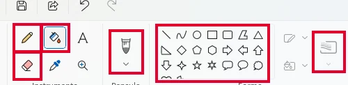
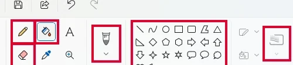
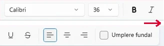

<!doctype html>
<html lang="ro">
<head>
<meta charset="utf-8">
<meta name="viewport" content="width=device-width, initial-scale=1, viewport-fit=cover">
<title>Misiunea Pixel</title>
<meta name="description" content="Lecție-joc pentru clasa a V-a: editorul grafic, crearea și salvarea imaginilor, instrumente de desenare, selecție, redimensionare, trunchiere, rotație, panoramare, culori, umplere și text — pas cu pas, cu un Paint simulat.">
<link rel="preconnect" href="https://fonts.googleapis.com">
<link rel="preconnect" href="https://fonts.gstatic.com" crossorigin>
<link rel="stylesheet" href="https://fonts.googleapis.com/css2?family=Baloo+2:wght@600;800&family=Outfit:wght@400;600;700&family=Space+Mono:wght@400;700&display=swap&subset=latin-ext">
<link rel="stylesheet" href="../_motor/motor.css">
<style>
:root{
  --desk:#EDEFF6; --paper:#FFFFFF; --paper2:#F1F3FA; --line:#D3D8E8;
  --ink:#181D33; --ink2:#586079; --accent:#2649B5; --accentInk:#FFFFFF; --sel:#DCE3FA;
  --mark:#FFE27A; --markInk:#181D33; --ok:#23784A; --okbg:#E0F2E7; --bad:#BF3434; --badbg:#FAE5E5;
  --fd:"Baloo 2","Segoe UI",system-ui,sans-serif; --fb:"Outfit","Segoe UI",system-ui,sans-serif; --fm:"Space Mono",Consolas,monospace;
}
@media (prefers-color-scheme:dark){:root:not([data-theme="light"]){
  --desk:#10121C; --paper:#181B28; --paper2:#212535; --line:#343A52;
  --ink:#E6E9F5; --ink2:#A4ABC4; --accent:#93AEFF; --accentInk:#10121C; --sel:#2A3566;
  --mark:#EFCF5C; --markInk:#181D33; --ok:#6CCB8F; --okbg:#18301F; --bad:#FF8078; --badbg:#3B1E1E;
}}
:root[data-theme="dark"]{
  --desk:#10121C; --paper:#181B28; --paper2:#212535; --line:#343A52;
  --ink:#E6E9F5; --ink2:#A4ABC4; --accent:#93AEFF; --accentInk:#10121C; --sel:#2A3566;
  --mark:#EFCF5C; --markInk:#181D33; --ok:#6CCB8F; --okbg:#18301F; --bad:#FF8078; --badbg:#3B1E1E;
}
/* tema jocului: paleta de culori a unui editor grafic, cu Culoarea 1 și Culoarea 2 */
.banda{display:flex;align-items:center;gap:10px;padding:7px 12px;white-space:nowrap;overflow:hidden}
.c12{flex:none;position:relative;width:26px;height:22px}
.c12 i{position:absolute;width:15px;height:15px;border:2px solid var(--paper);outline:1px solid var(--line);display:block}
.c12 i:first-child{left:0;top:0;background:#1C2A6B;z-index:1}
.c12 i:last-child{right:0;bottom:0;background:#FFFFFF}
.paleta{display:flex;gap:3px;flex-wrap:nowrap;overflow:hidden}
.paleta i{flex:none;width:14px;height:14px;border:1px solid rgba(0,0,0,.25);border-radius:2px;display:block}
.banda .px{font-family:var(--fm);font-size:.66rem;color:var(--ink2);margin-left:auto}
h1 .pix{display:inline-block;width:.38em;height:.38em;background:var(--accent);margin-left:.18em;box-shadow:.42em 0 0 #E0413A,.84em 0 0 #F2B705;vertical-align:.2em}
.hunt .tk{text-align:left}
/* desen din pixeli, în text (ilustrație făcută din pătrățele, nu imagine) */
.pxil{display:inline-grid;gap:1px;background:#C9CEDD;border:1px solid #9AA2BA;padding:1px;vertical-align:middle;margin:4px 6px 4px 0}
.pxil i{display:block}
.pxrow{display:flex;flex-wrap:wrap;align-items:center;gap:6px 10px;margin:6px 0}
.pxrow .sag{font-family:var(--fm);color:var(--ink2)}
/* PAINT SIMULAT (atelier) */
.pt-app{border:1px solid var(--line);border-radius:10px;background:var(--paper2);padding:8px;max-width:100%;box-sizing:border-box}
.pt-bar,.pt-opt,.pt-cul{display:flex;flex-wrap:wrap;gap:5px;align-items:center;margin-bottom:6px}
.pt-b{font:600 .8rem var(--fb);padding:5px 9px;border:1px solid var(--line);border-radius:6px;background:var(--paper);color:var(--ink);cursor:pointer}
.pt-b.sm{font-size:.74rem;padding:4px 8px}
.pt-b.on{background:var(--accent);color:var(--accentInk);border-color:var(--accent)}
.pt-cmd .pt-b{background:var(--paper)}
.pt-slot{display:inline-flex;align-items:center;gap:5px;font:600 .75rem var(--fb);padding:3px 8px 3px 4px;border:1px solid var(--line);border-radius:14px;background:var(--paper);color:var(--ink);cursor:pointer}
.pt-slot i{width:18px;height:18px;border-radius:50%;border:1px solid #777;display:block}
.pt-slot.on{outline:2px solid var(--accent);outline-offset:1px}
.pt-pal{display:flex;flex-wrap:wrap;gap:3px}
.pt-sw{width:24px;height:24px;border:1px solid #777;border-radius:4px;cursor:pointer;padding:0}
.pt-sw.on{outline:3px solid var(--accent);outline-offset:1px}
.pt-panou{background:var(--paper);border:1px solid var(--line);border-radius:8px;padding:8px;margin-bottom:6px;font-size:.85rem}
.pt-panou input{width:4.2em;font:inherit;padding:2px 4px;margin:0 6px 0 3px}
.pt-zona{max-width:100%;overflow:auto;background:#DDE1EA;border:1px solid var(--line);border-radius:6px;padding:8px;box-sizing:border-box}
.pt-grid{display:grid;gap:0;width:max-content;box-shadow:0 1px 4px rgba(0,0,0,.25)}
.pt-px{box-shadow:inset 0 0 0 .5px rgba(0,0,0,.12);cursor:crosshair}
.pt-px.sl{box-shadow:inset 0 0 0 2px #2649B5}
.pt-px.a1{box-shadow:inset 0 0 0 3px #E4002B}
.pt-stare{display:flex;flex-wrap:wrap;gap:4px 14px;justify-content:space-between;font:.78rem var(--fm);color:var(--ink2);margin-top:6px;padding:4px 6px;border-top:1px solid var(--line)}
.pt-stare button{font:700 .8rem var(--fm);width:24px;height:22px;margin-left:3px;border:1px solid var(--line);border-radius:4px;background:var(--paper);color:var(--ink);cursor:pointer}
.pt-msg{min-height:1.2em;font-size:.85rem;color:var(--ink2);margin:4px 2px}
.pt-teste{list-style:none;margin:6px 0 0;padding:0;font-size:.86rem}
.pt-teste li{padding:3px 6px;border-radius:5px;margin:2px 0}
.pt-teste li.ok{background:var(--okbg);color:var(--ok)}
.pt-teste li.bad{background:var(--badbg);color:var(--bad)}
/* caseta de text simulată */
.cs-bar{display:flex;flex-wrap:wrap;gap:6px 10px;align-items:center;font-size:.82rem;margin-bottom:8px}
.cs-bar input[type=text]{font:inherit;padding:4px 6px;width:14em;max-width:100%}
.cs-bar select{font:inherit;padding:2px}
.cs-bar fieldset{border:0;padding:0;margin:0;display:contents}
.cs-stil button{font:700 .85rem Georgia,serif;width:28px;height:26px;border:1px solid var(--line);border-radius:4px;background:var(--paper);color:var(--ink);cursor:pointer}
.cs-stil button.on{background:var(--accent);color:var(--accentInk)}
.cs-card{position:relative;min-height:150px;border-radius:8px;border:1px solid #999;overflow:hidden;display:flex;align-items:center;justify-content:center;padding:10px;box-sizing:border-box}
.cs-decor{position:absolute;inset:0;background:repeating-linear-gradient(135deg,transparent 0 22px,rgba(237,28,36,.55) 22px 30px,transparent 30px 52px,rgba(0,162,232,.55) 52px 60px)}
.cs-box{position:relative;max-width:100%;overflow-wrap:anywhere;padding:2px 6px;border:1.5px dashed #555;line-height:1.15;text-align:center}
.cs-box.fix{border-color:transparent}
.cs-box.gol{color:#777!important;font-style:italic}
</style>
</head>
<body>
<script src="../_motor/motor.js"></script>
<script>
/* MISIUNEA PIXEL, rescrisă PE PAȘI (26.09.2026).
   Profesorul: „informația e prea condensată — nu e beginner friendly — e mai mult test decât asistență de învățare”;
   „sarcini simple (cu variante reale pentru consolidare — la cerere) și posibilitatea efectivă a exersării —
   simulare a aplicației adevărate”; „evaluare neconformă cu ce s-a predat”.
   De aceea: fiecare nivel = pași mici (o idee, un exemplu „Uite cum”, „explică-mi altfel”, exercițiu cu indiciu și variante),
   atelier în PAINT SIMULAT (unelte, paletă, pixeli, bara de stare, TESTE bifate), abia apoi verificarea —
   și verificarea întreabă doar ce s-a predat în pași. */

/* culorile din paleta Paint-ului simulat (aceleași nuanțe ca paleta de bază din Paint) */
const PAL={'.':'#FFFFFF',k:'#000000',g:'#7F7F7F',r:'#ED1C24',o:'#FF7F27',y:'#FFF200',v:'#22B14C',c:'#00A2E8',s:'#99D9EA',b:'#3F48CC',p:'#A349A4',m:'#B97A57'};
const NUMEC={'#FFFFFF':'alb','#000000':'negru','#7F7F7F':'gri','#ED1C24':'roșu','#FF7F27':'portocaliu','#FFF200':'galben','#22B14C':'verde','#00A2E8':'albastru deschis','#99D9EA':'bleu','#3F48CC':'albastru','#A349A4':'mov','#B97A57':'maro'};
const fig=(f,w,h,alt,cap)=>`<figure class="captura"><a href="../grafica-v/img/${f}" target="_blank"></a><figcaption>${cap}</figcaption></figure>`;
/* desen din pixeli, mărit: fiecare literă e un pixel (vezi PAL) */
const px=(rows,cs=14,cul={})=>`<span class="pxil" role="img" aria-label="desen din pixeli, mărit" style="grid-template-columns:repeat(${rows[0].length},${cs}px);grid-auto-rows:${cs}px">${rows.join('').split('').map(ch=>`<i style="background:${cul[ch]||PAL[ch]}"></i>`).join('')}</span>`;
/* o mască pentru teste: păstrează doar pixelii pentru care f(r,c) e adevărat, restul „oricum” (?) */
const M=(rows,f)=>rows.map((row,r)=>[...row].map((ch,c)=>f(r,c)?ch:'?').join(''));

/* ================= SIMULATORUL: Paint în miniatură =================
   Unelte (ca în Paint): Creion, Umplere (găleata), Radieră, Selector de culoare (pipeta), Forme: dreptunghi (cu Shift),
   Selectare: dreptunghi. Comenzi: Anulare, Selectați tot, Copiere, Decupare, Lipire, Mută, Ștergere, Trunchiere,
   Rotire, Redimensionare, Editare culori (RGB), panoramare în bara de stare.
   Q: {start:[rânduri], unelte:[…], comenzi:[…], paleta:'k.r…', culori:{x:'#hex'}, teste:[{ce, masca|dim|zoom|copie+zona|forma}],
       solutie:[acțiuni], gresit:[acțiuni]}.  Acțiuni: ['u',unealta] ['c',literă] ['slot',1|2] ['p',rând,coloană]
       ['cmd',comanda] ['opt','shift'|'umplere'] ['zoom','+'|'-'] ['rgb',R,G,B] ['redim',procent].
   Testele se verifică pe DESEN (pixeli, mărime, vedere), nu pe pașii făcuți: orice drum corect trece. */
const JocPaint=(function(){
  const W='#FFFFFF';
  const UNELTE={creion:'Creion',galeata:'Umplere (găleata)',radiera:'Radieră',pipeta:'Selector de culoare',dreptunghi:'Forme: dreptunghi',selectie:'Selectare: dreptunghi'};
  const COMENZI={anulare:'Anulare (Ctrl+Z)',tot:'Selectați tot (Ctrl+A)',copiere:'Copiere (Ctrl+C)',decupare:'Decupare (Ctrl+X)',lipire:'Lipire (Ctrl+V)',muta:'Mută selecția',stergere:'Ștergere (Delete)',trunchiere:'Trunchiere (Crop)',rotd:'Rotire 90° la dreapta',rots:'Rotire 90° la stânga',rot180:'Rotire 180°',redim:'Redimensionare',rgb:'Editare culori',reset:'Începe din nou'};
  const ZOOM=[50,100,200,300,400];
  let st=null,Q0=null,API0=null;
  const hx=(Q,ch)=>((Q.culori&&Q.culori[ch])||PAL[ch]||W).toUpperCase();
  const din=(Q,rows)=>rows.map(r=>[...r].map(ch=>hx(Q,ch)));
  const numeC=c=>NUMEC[c]||`RGB ${parseInt(c.slice(1,3),16)}, ${parseInt(c.slice(3,5),16)}, ${parseInt(c.slice(5,7),16)}`;
  const H=()=>st.g.length,Wd=()=>st.g[0].length;
  const snap=()=>{st.hist.push(st.g.map(r=>r.slice()));if(st.hist.length>80)st.hist.shift()};
  const norm=(a,b)=>[Math.min(a[0],b[0]),Math.min(a[1],b[1]),Math.max(a[0],b[0]),Math.max(a[1],b[1])];
  const taie=s=>st.g.slice(s[0],s[2]+1).map(r=>r.slice(s[1],s[3]+1));
  const goleste=s=>{for(let r=s[0];r<=s[2];r++)for(let c=s[1];c<=s[3];c++)st.g[r][c]=W};
  function stare0(Q){
    return {g:din(Q,Q.start),tool:Q.unealta||Q.unelte[0],c1:'#000000',c2:W,slot:1,sel:null,a:null,clip:null,mut:null,plasez:null,
      shift:false,umplere:false,zoom:100,hist:[],pal:[...(Q.paleta||'k.grocvbm')].map(ch=>hx(Q,ch)),panou:null,msg:'',rez:null};
  }
  function pune(bl,r0,c0){
    for(let i=0;i<bl.length;i++)for(let j=0;j<bl[0].length;j++){const r=r0+i,c=c0+j;if(r<H()&&c<Wd())st.g[r][c]=bl[i][j]}
    st.sel=[r0,c0,Math.min(H()-1,r0+bl.length-1),Math.min(Wd()-1,c0+bl[0].length-1)];
  }
  function umple(r,c,col){
    const t=st.g[r][c];if(t===col)return;const q=[[r,c]];st.g[r][c]=col;
    while(q.length){const [a,b]=q.pop();[[1,0],[-1,0],[0,1],[0,-1]].forEach(([dr,dc])=>{const x=a+dr,y=b+dc;
      if(x>=0&&y>=0&&x<H()&&y<Wd()&&st.g[x][y]===t){st.g[x][y]=col;q.push([x,y])}})}
  }
  function dreptunghi(a,b){
    let [r0,c0]=a,[r1,c1]=b;
    if(st.shift){const s=Math.min(Math.abs(r1-r0),Math.abs(c1-c0));r1=r0+(r1>=r0?s:-s);c1=c0+(c1>=c0?s:-s)}
    const s=norm([r0,c0],[r1,c1]);
    for(let r=s[0];r<=s[2];r++)for(let c=s[1];c<=s[3];c++){
      const m=r===s[0]||r===s[2]||c===s[1]||c===s[3];
      if(m)st.g[r][c]=st.c1;else if(st.umplere)st.g[r][c]=st.c2}
  }
  function rot(dir){
    const h=H(),w=Wd(),o=st.g;
    if(dir==='d')st.g=Array.from({length:w},(_,i)=>Array.from({length:h},(_,j)=>o[h-1-j][i]));
    else if(dir==='s')st.g=Array.from({length:w},(_,i)=>Array.from({length:h},(_,j)=>o[j][w-1-i]));
    else st.g=o.map(r=>r.slice().reverse()).reverse();
    st.sel=null;st.a=null;
  }
  function redim(p){
    const h=H(),w=Wd(),nh=Math.max(1,Math.round(h*p/100)),nw=Math.max(1,Math.round(w*p/100)),o=st.g;
    st.g=Array.from({length:nh},(_,i)=>Array.from({length:nw},(_,j)=>o[Math.floor(i*h/nh)][Math.floor(j*w/nw)]));
    st.sel=null;st.a=null;
  }
  function clicPixel(r,c){
    if(st.plasez){
      const bl=st.plasez==='muta'?st.mut:st.clip;if(st.plasez==='lipire')snap();
      pune(bl,r,c);st.plasez=null;st.msg='Gata: bucata stă acum în locul nou (e încă selectată).';return;
    }
    const t=st.tool;
    if(t==='creion'){snap();st.g[r][c]=st.c1;st.msg=''}
    else if(t==='radiera'){snap();st.g[r][c]=W;st.msg=''}
    else if(t==='galeata'){snap();umple(r,c,st.c1);st.msg=''}
    else if(t==='pipeta'){st['c'+st.slot]=st.g[r][c];st.msg=`Ai luat culoarea „${numeC(st.g[r][c])}” din desen: e acum Culoare ${st.slot}.`}
    else if(t==='dreptunghi'||t==='selectie'){
      if(!st.a){st.a=[r,c];st.msg='Colțul 1 e ales (chenar roșu). Apasă acum colțul opus.'}
      else{
        if(t==='dreptunghi'){snap();dreptunghi(st.a,[r,c]);st.msg=st.shift?'Ai ținut Shift: a ieșit un pătrat.':''}
        else{st.sel=norm(st.a,[r,c]);st.msg=`Zonă selectată: ${st.sel[3]-st.sel[1]+1} × ${st.sel[2]-st.sel[0]+1} pixeli (chenar albastru).`}
        st.a=null;
      }
    }
  }
  function cmd(k){
    if(['copiere','decupare','muta','stergere','trunchiere'].includes(k)&&!st.sel){st.msg='Întâi selectează o zonă: unealta Selectare, apoi apeși două colțuri opuse.';return}
    if(k==='reset'){const Q=Q0;st=Object.assign(stare0(Q),{body:st.body});return}
    if(k==='anulare'){if(st.hist.length){st.g=st.hist.pop();st.sel=null;st.a=null;st.plasez=null;st.msg='Am anulat ultima acțiune.'}else st.msg='Nu mai e nimic de anulat.';return}
    if(k==='tot'){st.sel=[0,0,H()-1,Wd()-1];st.msg='Toată imaginea e selectată.'}
    else if(k==='copiere'){st.clip=taie(st.sel);st.msg='Copiat în memorie. Originalul a rămas pe loc.'}
    else if(k==='decupare'){st.clip=taie(st.sel);snap();goleste(st.sel);st.msg='Zona a plecat de pe loc și a ajuns în memorie.'}
    else if(k==='lipire'){if(!st.clip){st.msg='Memoria e goală: întâi copiezi sau decupezi ceva.';return}st.plasez='lipire';st.msg='Apasă pixelul unde vrei colțul din stânga-sus al bucății lipite.'}
    else if(k==='muta'){st.mut=taie(st.sel);snap();goleste(st.sel);st.plasez='muta';st.msg='Apasă pixelul unde vrei colțul din stânga-sus. (În Paint o tragi cu mouse-ul.)'}
    else if(k==='stergere'){snap();goleste(st.sel);st.sel=null;st.msg='Zona a fost ștearsă: a rămas albă.'}
    else if(k==='trunchiere'){snap();st.g=taie(st.sel);st.sel=null;st.msg='Imaginea a fost tăiată: a rămas doar selecția.'}
    else if(k==='rotd'||k==='rots'||k==='rot180'){snap();rot(k==='rotd'?'d':k==='rots'?'s':'180');st.msg='Imaginea s-a rotit. Uită-te la mărimea din bara de stare.'}
    else if(k==='redim'||k==='rgb'){st.panou=st.panou===k?null:k;st.msg=''}
  }
  function evalTest(Q,t){
    if(t.masca){if(t.masca.length!==H()||t.masca[0].length!==Wd())return false;
      return t.masca.every((row,r)=>[...row].every((ch,c)=>ch==='?'||st.g[r][c]===hx(Q,ch)))}
    if(t.dim)return Wd()===t.dim[0]&&H()===t.dim[1];
    if(t.zoom)return st.zoom===t.zoom;
    if(t.copie){const S=din(Q,Q.start),[a,b,c,d]=t.copie,pat=S.slice(a,c+1).map(r=>r.slice(b,d+1)),ph=pat.length,pw=pat[0].length,[z0,z1,z2,z3]=t.zona;
      for(let r=z0;r+ph-1<=z2&&r+ph-1<H();r++)for(let cc=z1;cc+pw-1<=z3&&cc+pw-1<Wd();cc++)
        if(pat.every((row,i)=>row.every((v,j)=>st.g[r+i][cc+j]===v)))return true;
      return false}
    if(t.forma){const f=t.forma,K=hx(Q,f.contur);let r0=1e9,c0=1e9,r1=-1,c1=-1;
      st.g.forEach((row,r)=>row.forEach((v,c)=>{if(v!==W){r0=Math.min(r0,r);r1=Math.max(r1,r);c0=Math.min(c0,c);c1=Math.max(c1,c)}}));
      if(r1<0)return false;const h=r1-r0+1,w=c1-c0+1;if(h<3||w<3)return false;if(f.patrat&&h!==w)return false;
      for(let r=r0;r<=r1;r++)for(let c=c0;c<=c1;c++){const m=r===r0||r===r1||c===c0||c===c1,v=st.g[r][c];
        if(m&&v!==K)return false;
        if(!m&&f.interior&&v!==hx(Q,f.interior))return false;
        if(!m&&!f.interior&&v===K)return false}
      return true}
    return false;
  }
  function draw(){
    const Q=Q0,b=st.body,h=H(),w=Wd(),esc=API0.esc;
    const loc=Math.max(120,Math.min(300,(b.clientWidth||300)-44));   // lățimea disponibilă: pe telefon grila încape fără derulare la 100%
    const cs=Math.round(Math.max(8,Math.min(28,Math.floor(loc/w)))*st.zoom/100);
    const doua=Q.unelte.includes('dreptunghi')||Q.doua;
    let x=`<div class="pt-app">
      <div class="pt-bar" role="toolbar" aria-label="Instrumente">${Q.unelte.map(u=>`<button type="button" class="pt-b${st.tool===u?' on':''}" data-u="${u}" aria-pressed="${st.tool===u}">${UNELTE[u]}</button>`).join('')}</div>
      <div class="pt-bar pt-cmd">${(Q.comenzi||[]).concat(['anulare','reset']).map(k=>`<button type="button" class="pt-b sm" data-cmd="${k}">${COMENZI[k]}</button>`).join('')}</div>`;
    if(Q.unelte.includes('dreptunghi'))x+=`<div class="pt-opt">
      <button type="button" class="pt-b sm${st.shift?' on':''}" data-opt="shift" aria-pressed="${st.shift}">Țin apăsat Shift</button>
      <button type="button" class="pt-b sm${st.umplere?' on':''}" data-opt="umplere" aria-pressed="${st.umplere}">Umplere formă: ${st.umplere?'culoare solidă':'fără umplere'}</button></div>`;
    x+=`<div class="pt-cul">
      <button type="button" class="pt-slot${st.slot===1?' on':''}" data-slot="1"><i style="background:${st.c1}"></i>Culoare 1</button>
      ${doua?`<button type="button" class="pt-slot${st.slot===2?' on':''}" data-slot="2"><i style="background:${st.c2}"></i>Culoare 2</button>`:''}
      <span class="pt-pal">${st.pal.map(c=>`<button type="button" class="pt-sw${st['c'+st.slot]===c?' on':''}" data-c="${c}" style="background:${c}" title="${numeC(c)}" aria-label="${numeC(c)}"></button>`).join('')}</span></div>`;
    if(st.panou==='rgb'){const c=st['c'+st.slot];
      x+=`<div class="pt-panou"><b>Editare culori</b> · Culoare ${st.slot}<br>
        Roșu<input type="number" min="0" max="255" data-rgb="0" value="${parseInt(c.slice(1,3),16)}">
        Verde<input type="number" min="0" max="255" data-rgb="1" value="${parseInt(c.slice(3,5),16)}">
        Albastru<input type="number" min="0" max="255" data-rgb="2" value="${parseInt(c.slice(5,7),16)}">
        <button type="button" class="pt-b sm" data-rgbok="1">OK</button></div>`}
    if(st.panou==='redim')x+=`<div class="pt-panou"><b>Redimensionare</b> · Procent (proporțiile se păstrează, ca butonul-lanț)<br>
      Procent<input type="number" min="10" max="400" data-pr="1" value="100"> % <button type="button" class="pt-b sm" data-redimok="1">OK</button></div>`;
    x+=`<div class="pt-zona"><div class="pt-grid" style="grid-template-columns:repeat(${w},${cs}px);grid-auto-rows:${cs}px">`;
    for(let r=0;r<h;r++)for(let c=0;c<w;c++){
      const s=st.sel&&r>=st.sel[0]&&r<=st.sel[2]&&c>=st.sel[1]&&c<=st.sel[3],a=st.a&&st.a[0]===r&&st.a[1]===c;
      x+=`<div class="pt-px${s?' sl':''}${a?' a1':''}" data-rc="${r},${c}" style="background:${st.g[r][c]}"></div>`}
    x+=`</div></div>
      <div class="pt-stare"><span>Imagine: <b>${w} × ${h}</b> pixeli</span><span>Vedere: <b>${st.zoom}%</b>${(Q.comenzi||[]).includes('zoom')?`<button type="button" data-zoom="-" aria-label="Micșorează vederea">−</button><button type="button" data-zoom="+" aria-label="Mărește vederea">+</button>`:''}</span><span>Unealta: ${UNELTE[st.tool]}</span></div>
      <div class="pt-msg" aria-live="polite">${esc(st.msg)}</div>
      <div class="lbl" style="margin-top:6px">Testele</div>
      <ul class="pt-teste">${Q.teste.map((t,i)=>`<li class="${st.rez?(st.rez[i]?'ok':'bad'):''}">${st.rez?(st.rez[i]?'✓':'✗'):'○'} ${t.ce}</li>`).join('')}</ul></div>`;
    b.innerHTML=x;
  }
  function render(Q,body,api){
    Q0=Q;API0=api;st=stare0(Q);st.body=body;
    Q.teste.forEach(t=>{if(t.masca&&t.masca.some(r=>r.length!==t.masca[0].length))throw new Error('JocPaint: mască neregulată')});
    body.onclick=e=>{
      if(!body.querySelector('.pt-app'))return;
      const el=e.target.closest('[data-u],[data-c],[data-slot],[data-cmd],[data-opt],[data-rc],[data-zoom],[data-rgbok],[data-redimok]');
      if(!el||!body.contains(el))return;
      if(api.done()&&el.dataset.cmd!=='reset')return;
      const d=el.dataset;
      if(d.u){st.tool=d.u;st.a=null;st.plasez=null;st.msg=''}
      else if(d.c){st['c'+st.slot]=d.c;st.msg=`Culoare ${st.slot}: ${numeC(d.c)}.`}
      else if(d.slot){st.slot=+d.slot;st.msg=`Acum alegi Culoare ${st.slot}: apasă o culoare din paletă.`}
      else if(d.cmd)cmd(d.cmd);
      else if(d.opt){st[d.opt]=!st[d.opt]}
      else if(d.rc){const [r,c]=d.rc.split(',').map(Number);if(r<H()&&c<Wd())clicPixel(r,c)}
      else if(d.zoom){const i=ZOOM.indexOf(st.zoom)+(d.zoom==='+'?1:-1);if(i>=0&&i<ZOOM.length)st.zoom=ZOOM[i];st.msg='Vederea s-a schimbat; imaginea are aceiași pixeli.'}
      else if(d.rgbok){const v=[...body.querySelectorAll('[data-rgb]')].map(e=>Math.max(0,Math.min(255,Math.round(+e.value||0))));
        const c=('#'+v.map(n=>n.toString(16).padStart(2,'0')).join('')).toUpperCase();
        st['c'+st.slot]=c;if(!st.pal.includes(c))st.pal.push(c);st.panou=null;st.msg=`Culoarea ta (RGB ${v.join(', ')}) e acum Culoare ${st.slot} și a intrat în paletă.`}
      else if(d.redimok){const p=Math.max(10,Math.min(400,Math.round(+body.querySelector('[data-pr]').value||100)));
        snap();redim(p);st.panou=null;st.msg=`Redimensionare la ${p}%: s-a schimbat numărul de pixeli.`}
      draw();
    };
    draw();
    const nav=api.checkButton(()=>{
      st.rez=Q.teste.map(t=>evalTest(Q,t));draw();
      const i=st.rez.indexOf(false);
      if(i<0){nav.innerHTML='';api.resolve(true)}
      else{api.resolve(false,Q.teste[i].msg||`Testul „${Q.teste[i].ce}” nu trece încă.`);
        api.revealButton(()=>{joaca(body,Q.solutie);st.rez=Q.teste.map(t=>evalTest(Q,t));draw();nav.innerHTML='';
          api.giveUp('pe planșă e acum rezolvarea. Uită-te ce s-a schimbat și încearcă și exercițiul următor.')})}
    },'Rulează testele');
  }
  function joaca(body,acts){
    const k=s=>{const e=body.querySelector(s);if(!e)throw new Error('JocPaint: lipsește '+s);e.click()};
    k('[data-cmd="reset"]');
    acts.forEach(a=>{const [t,...v]=a;
      if(t==='u')k(`[data-u="${v[0]}"]`);
      else if(t==='c')k(`[data-c="${hx(Q0,v[0])}"]`);
      else if(t==='slot')k(`[data-slot="${v[0]}"]`);
      else if(t==='p')k(`[data-rc="${v[0]},${v[1]}"]`);
      else if(t==='cmd')k(`[data-cmd="${v[0]}"]`);
      else if(t==='opt')k(`[data-opt="${v[0]}"]`);
      else if(t==='zoom')k(`[data-zoom="${v[0]}"]`);
      else if(t==='rgb'){k('[data-cmd="rgb"]');body.querySelectorAll('[data-rgb]').forEach((e,i)=>e.value=v[i]);k('[data-rgbok]')}
      else if(t==='redim'){k('[data-cmd="redim"]');body.querySelector('[data-pr]').value=v[0];k('[data-redimok]')}
      else throw new Error('JocPaint: acțiune necunoscută '+t);
    });
  }
  return {render,rezolva:(Q,body)=>joaca(body,Q.solutie),gresit:(Q,body)=>joaca(body,Q.gresit)};
})();

/* ================= SIMULATORUL 2: caseta de text din Paint =================
   Q: {fundal, culori:[[hex,nume]…], bune:[hex cu contrast bun], min:dimensiune minimă, teste:['text','marime','contrast','transparent'|'opac','fixat'],
       solutie:{text,marime,culoare,opac}, gresit:{…ce strică}}. După „clic în afara casetei” textul e fixat (pixeli): nu se mai schimbă, decât cu Anulare. */
const JocCaseta=(function(){
  let st=null;
  const TESTE={
    text:Q=>['Ai scris un titlu în casetă',()=>st.text.trim().length>=3],
    marime:Q=>[`Dimensiunea literelor e cel puțin ${Q.min}`,()=>st.marime>=Q.min],
    contrast:Q=>['Culoarea textului are contrast bun cu fundalul felicitării',()=>Q.bune.includes(st.cul)],
    transparent:Q=>['Fundal transparent: desenul se vede în jurul literelor (Umplere fundal nebifat)',()=>!st.opac],
    opac:Q=>['Umplere fundal bifat: textul stă pe un dreptunghi alb, ușor de citit',()=>st.opac],
    fixat:Q=>['Ai dat clic în afara casetei: textul e fixat în desen',()=>st.fixat]
  };
  function render(Q,body,api){
    body.onclick=null;
    st={text:'',font:'Calibri',marime:18,b:false,i:false,u:false,cul:Q.culori[0][0],opac:false,fixat:false,rez:null};
    const T=Q.teste.map(k=>TESTE[k](Q));
    body.innerHTML=`<div class="pt-app">
      <div class="cs-bar"><fieldset>
        <label>Text <input type="text" data-f="text" maxlength="40" placeholder="Scrie titlul aici"></label>
        <label>Font <select data-f="font">${['Calibri','Arial','Comic Sans MS','Times New Roman'].map(f=>`<option>${f}</option>`).join('')}</select></label>
        <label>Dimensiune <select data-f="marime">${[12,18,24,36,48,72].map(n=>`<option value="${n}"${n===18?' selected':''}>${n}</option>`).join('')}</select></label>
        <span class="cs-stil"><button type="button" data-s="b" aria-label="Aldin"><b>B</b></button><button type="button" data-s="i" aria-label="Cursiv"><i>I</i></button><button type="button" data-s="u" aria-label="Subliniat"><u>U</u></button></span>
        <label><input type="checkbox" data-f="opac"> Umplere fundal</label>
        <span>Culoare text: <span class="pt-pal" style="display:inline-flex">${Q.culori.map(([c,n])=>`<button type="button" class="pt-sw" data-cul="${c}" style="background:${c}" aria-label="${n}" title="${n}"></button>`).join('')}</span> <b data-cn></b></span>
      </fieldset></div>
      <div class="cs-card" style="background:${Q.fundal}"><div class="cs-decor"></div><div class="cs-box" data-box></div></div>
      <div class="row" style="margin-top:8px"><button type="button" class="pt-b" data-fix="1">Clic în afara casetei</button><button type="button" class="pt-b sm" data-undo="1">Anulare (Ctrl+Z)</button></div>
      <div class="pt-msg" data-msg aria-live="polite">Caseta e deschisă: poți scrie și formata.</div>
      <div class="lbl" style="margin-top:6px">Testele</div><ul class="pt-teste" data-teste></ul></div>`;
    const $=s=>body.querySelector(s);
    function upd(){
      const bx=$('[data-box]');
      bx.textContent=st.text||'(caseta de text)';bx.classList.toggle('gol',!st.text);bx.classList.toggle('fix',st.fixat);
      bx.style.cssText=`font-family:'${st.font}',sans-serif;font-size:${Math.round(st.marime*.55)+6}px;color:${st.cul};font-weight:${st.b?700:400};font-style:${st.i?'italic':'normal'};text-decoration:${st.u?'underline':'none'};background:${st.opac?'#FFFFFF':'transparent'}`;
      body.querySelectorAll('[data-cul]').forEach(e=>e.classList.toggle('on',e.dataset.cul===st.cul));
      body.querySelectorAll('[data-s]').forEach(e=>e.classList.toggle('on',st[e.dataset.s]));
      $('[data-cn]').textContent=(Q.culori.find(c=>c[0]===st.cul)||['',''])[1];
      $('fieldset').disabled=st.fixat;
      $('[data-teste]').innerHTML=T.map(([ce],i)=>`<li class="${st.rez?(st.rez[i]?'ok':'bad'):''}">${st.rez?(st.rez[i]?'✓':'✗'):'○'} ${ce}</li>`).join('');
    }
    $('[data-f="text"]').oninput=e=>{st.text=e.target.value;upd()};
    $('[data-f="font"]').onchange=e=>{st.font=e.target.value;upd()};
    $('[data-f="marime"]').onchange=e=>{st.marime=+e.target.value;upd()};
    $('[data-f="opac"]').onchange=e=>{st.opac=e.target.checked;upd()};
    body.querySelectorAll('[data-s]').forEach(b=>b.onclick=()=>{if(st.fixat)return;st[b.dataset.s]=!st[b.dataset.s];upd()});
    body.querySelectorAll('[data-cul]').forEach(b=>b.onclick=()=>{if(st.fixat)return;st.cul=b.dataset.cul;upd()});
    $('[data-fix]').onclick=()=>{if(api.done())return;st.fixat=true;$('[data-msg]').textContent='Textul a devenit pixeli: nu-l mai poți schimba. Greșeală? Apasă Anulare (Ctrl+Z).';upd()};
    $('[data-undo]').onclick=()=>{if(api.done())return;if(st.fixat){st.fixat=false;$('[data-msg]').textContent='Am anulat: caseta e din nou deschisă, poți corecta.'}else $('[data-msg]').textContent='Caseta e deja deschisă.';upd()};
    upd();
    const nav=api.checkButton(()=>{
      st.rez=T.map(([,f])=>f());upd();
      const i=st.rez.indexOf(false);
      if(i<0){nav.innerHTML='';api.resolve(true)}
      else{api.resolve(false,`Testul „${T[i][0]}” nu trece încă.`);
        api.revealButton(()=>{fill(Q,body,Q.solutie);st.rez=T.map(([,f])=>f());upd();nav.innerHTML='';api.giveUp('caseta arată acum cum trebuia. Uită-te la dimensiune, culoare și Umplere fundal.')})}
    },'Rulează testele');
  }
  function fill(Q,body,s){
    const $=x=>{const e=body.querySelector(x);if(!e)throw new Error('JocCaseta: lipsește '+x);return e};
    if(st.fixat)$('[data-undo]').click();
    const t=$('[data-f="text"]');t.value=s.text;t.dispatchEvent(new Event('input',{bubbles:true}));
    const m=$('[data-f="marime"]');m.value=String(s.marime);m.dispatchEvent(new Event('change',{bubbles:true}));
    $(`[data-cul="${s.culoare}"]`).click();
    const o=$('[data-f="opac"]');o.checked=!!s.opac;o.dispatchEvent(new Event('change',{bubbles:true}));
    $('[data-fix]').click();
  }
  return {render,rezolva:(Q,body)=>fill(Q,body,Q.solutie),gresit:(Q,body)=>fill(Q,body,Object.assign({},Q.solutie,Q.gresit))};
})();

/* ---------- desenele de lucru (fiecare literă = un pixel, vezi PAL) ---------- */
const ROBOT=['........','.yyyyyy.','.yyyyyy.','.yyyyyy.','.yyyyyy.','........'];
const ROBOT_OK=['........','.yyyyyy.','.ykyyky.','.yyyyyy.','.ykkkky.','........'];
const CASA=['............','.....k......','....k.k.....','...k...k....','..kkkkkkk...','..k.....k...','..k.........','..kkkkkkk...','............'];
const CASA_OK=['............','.....k......','....k.k.....','...k...k....','..kkkkkkk...','..krrrrrk...','..krrrrrk...','..kkkkkkk...','............'];
const BRAD=['..............','..v...........','.vvv..........','.vvv..........','..m...........','..m...........','..............','..............'];
const POZA=['............','..........y.','.....r....y.','....rrr...y.','...rrrrr..y.','...mm.mm..y.','...mm.mm..y.','............','gggggggggggg'];
const POZA_OK=['..r..','.rrr.','rrrrr','mm.mm','mm.mm'];
const CULCAT=['.vv..y','vvv..y','vvvmmy','.vv..y'];
const DREPT=['.vv.','vvvv','vvvv','.m..','.m..','yyyy'];
const MARE=['..yyyy..','..yyyy..','yyyyyyyy','yyyyyyyy','..rrrr..','..rrrr..'];
const MIC=['.yy.','yyyy','.rr.'];
const SOARE=['..........','..yy......','.yyyy.....','.yyyy.....','..yy......','vvvvvvvvvv','vvvvvvvvvv'];
const SOARE_OK=SOARE.map(r=>r.replace(/y/g,'x'));
const DEAL=['..........','..........','..........','......vv..','....vvvvvv','vvvvvvvvvv'];
const CASUTA=['.........','....x....','...xxx...','..xxxxx..','..mmmmm..','..mm.mm..','..mm.mm..'];
const CASUTA_OK=['.........','....x....','...xxx...','..xxxxx..','..mmmmm..','..mmxmm..','..mmxmm..'];

/* conținuturile programei (OMEN 3393/2017), textul exact din curriculum.json */
const LEVELS=[
/* ================= 1. Ce face un editor grafic (lecția 18) ================= */
{t:'Ce face un editor grafic',lectii:[18],continuturi:['Rolul unui editor grafic','Elemente de interfață specifice'],
 obiectiv:'știi la ce folosește un editor grafic, din ce e făcută o imagine și recunoști cele cinci zone ale ferestrei Paint.',
 pasi:[
  {t:'Ce este un editor grafic',
   text:`<p>Un <mark>editor grafic</mark> este o aplicație cu care <strong>creezi desene</strong> și <strong>modifici imagini</strong>.</p>
<p>Două exemple:</p>
<ul><li><strong>Paint</strong>, care vine gata instalat cu Windows;</li>
<li><strong>GIMP</strong>, care e gratuit și are mai multe unelte.</li></ul>
<p>Cum pornești Paint: apeși butonul <strong>Start</strong> din Windows, scrii <em>Paint</em> și apeși <kbd>Enter</kbd>.</p>`,
   exemplu:`<p>Ce poți face cu Paint, de exemplu:</p><ul><li>desenezi o felicitare pentru ziua școlii;</li><li>tai marginea urâtă a unei poze;</li><li>micșorezi o poză ca s-o trimiți mai ușor.</li></ul>`,
   incearca:{t:'choice',q:'La ce folosește un editor grafic?',o:['Creezi desene și modifici imagini','Scrii și formatezi un referat lung','Navighezi pe paginile web','Faci calcule în tabele'],ok:0,ajutor:'Recitește prima propoziție a pasului.',why:'Editorul grafic lucrează cu imagini. Pentru referat folosești un editor de text, pentru pagini web un browser, iar pentru tabele cu calcule o foaie de calcul.'},
   inca:[
    {t:'classify',q:'E un editor grafic sau altă aplicație?',cats:['Editor grafic','Altă aplicație'],items:[['Paint',0],['GIMP',0],['Browserul (Chrome, Edge)',1],['Calculatorul din Windows',1]],ajutor:'Pasul a dat două exemple de editoare grafice.',why:'Paint și GIMP lucrează cu imagini. Browserul deschide pagini web, iar Calculatorul face socoteli.'},
    {t:'tf',q:'Paint trebuie cumpărat și instalat separat.',ok:false,ajutor:'Ce a spus pasul despre Paint și Windows?',why:'Fals. Paint vine gata instalat cu Windows. Îl pornești din Start: scrii Paint și apeși Enter.'}
   ]},
  {t:'Imaginea e făcută din pixeli',
   text:`<p>O imagine de pe calculator e făcută din <mark>pixeli</mark>: pătrățele foarte mici, <strong>fiecare de o singură culoare</strong>. Sunt atât de mici încât nu le vezi unul câte unul.</p>
<p><mark>Mărimea imaginii</mark> se scrie <strong>lățime × înălțime</strong>, în pixeli. O imagine de <strong>800 × 600</strong> pixeli are 800 de pixeli pe orizontală (de la stânga la dreapta) și 600 pe verticală (de sus în jos).</p>`,
   exemplu:`<p>O inimă de 7 × 6 pixeli, mărită mult, ca să vezi pătrățelele:</p>${px(['.rr.rr.','rrrrrrr','rrrrrrr','.rrrrr.','..rrr..','...r...'],18)}<p>Are 7 pixeli pe lățime și 6 pe înălțime. Fiecare pătrățel are o singură culoare: roșu sau alb.</p>`,
   altfel:`<p>Gândește-te la un <strong>mozaic</strong> din pietricele colorate sau la o foaie de matematică pe care colorezi pătrățelele. De departe vezi un desen; de aproape vezi pătrățelele. Pixelii sunt pătrățelele imaginii.</p>`,
   incearca:{t:'tf',q:'O imagine de pe calculator este formată din pixeli, adică pătrățele mici, fiecare de o singură culoare.',ok:true,ajutor:'Recitește prima propoziție din pas.',why:'Adevărat. Dacă mărești foarte mult vederea, pixelii se văd ca niște pătrățele.'},
   inca:[
    {t:'choice',q:'O imagine are 800 × 600 pixeli. Câți pixeli are pe lățime (de la stânga la dreapta)?',o:['800','600','1400','200'],ok:0,ajutor:'Primul număr e lățimea.',why:'Mărimea se scrie lățime × înălțime: primul număr (800) e lățimea, al doilea (600) e înălțimea.'},
    {t:'choice',q:`Câți pixeli are pe lățime desenul acesta? ${px(['.kk.k','kkkkk','.k.k.'],16)}`,o:['5','3','8','15'],ok:0,ajutor:'Numără pătrățelele de pe un rând, de la stânga la dreapta.',why:'Pe fiecare rând sunt 5 pătrățele, deci lățimea e de 5 pixeli. Înălțimea e de 3 pixeli (3 rânduri).'}
   ]},
  {t:'Fereastra Paint: cinci zone',
   text:`<p>Fereastra Paint are cinci zone. Uită-te la captură și caută-le pe rând:</p>
<ol><li><strong>bara de titlu</strong>, sus: numele fișierului;</li>
<li><strong>bara cu instrumente</strong>: creion, pensule, forme, text;</li>
<li><strong>paleta de culori</strong>: culorile din care alegi;</li>
<li><strong>zona de desen</strong>, în mijloc: foaia albă;</li>
<li><strong>bara de stare</strong>, jos: mărimea imaginii în pixeli și cât de mult e mărită vederea.</li></ol>
${fig('fereastra-paint.webp',1000,688,'Fereastra Paint din Windows 11, în română, cu cinci zone încadrate cu roșu: bara de titlu, bara cu instrumente, paleta de culori, zona de desen și bara de stare','Paint din Windows 11: cele cinci zone, încadrate pe fereastra adevărată.')}`,
   incearca:{t:'match',q:'Leagă fiecare parte a ferestrei de ce găsești în ea.',pairs:[['Bara de titlu','numele fișierului'],['Bara cu instrumente','creionul, pensulele, formele'],['Paleta de culori','culorile din care alegi'],['Bara de stare','mărimea imaginii în pixeli']],ajutor:'Recitește lista din pas: fiecare rând începe cu numele zonei.',why:'Sus afli ce fișier ai deschis, în bara cu instrumente alegi ce faci, în paletă alegi culoarea, iar jos citești măsurile.'},
   inca:[
    {t:'choice',q:'Unde citești mărimea imaginii, în pixeli?',o:['În bara de stare, jos','În bara de titlu, sus','În paleta de culori','În bara cu instrumente'],ok:0,ajutor:'E zona de la baza ferestrei.',why:'Bara de stare, jos, arată mărimea imaginii și cât e mărită vederea.'},
    {t:'choice',q:'Unde desenezi efectiv?',o:['În zona de desen, în mijloc','În bara de titlu','În bara de stare','În paleta de culori'],ok:0,ajutor:'E foaia albă din mijlocul ferestrei.',why:'Zona de desen e foaia pe care lucrezi. Restul zonelor te ajută să alegi unealta, culoarea și să citești măsurile.'}
   ]},
  {t:'Strategia: cum afli ce face un buton',
   text:`<p>Nu trebuie să știi pe de rost toate butoanele. Când nu știi ce face unul, urmezi <strong>patru pași</strong>:</p>
<ol><li><strong>ține mouse-ul</strong> pe buton, fără să apeși;</li>
<li><strong>citește eticheta</strong> care apare (numele butonului);</li>
<li><strong>încearcă</strong> butonul pe o imagine de probă;</li>
<li>nu-ți place ce a ieșit? Apeși <kbd>Ctrl</kbd>+<kbd>Z</kbd> (<mark>Anulare</mark>) și totul revine cum era.</li></ol>
${fig('instrumente-bara-fara-nume.webp',500,111,'Decupaj din bara cu instrumente a Paint-ului: două rânduri de pictograme mici în stânga, o pictogramă mai mare în mijloc, un grup cu forme geometrice și două butoane în dreapta','Bara cu instrumente, așa cum o vezi: doar pictograme. Numele apar când ții mouse-ul pe ele.')}`,
   exemplu:`<p>Vezi o pictogramă cu o găleată și nu știi ce face. Ții mouse-ul pe ea și apare eticheta <b>Umplere</b>. Dai un clic pe o formă din desenul de probă: s-a colorat. Nu ți-a plăcut culoarea? <kbd>Ctrl</kbd>+<kbd>Z</kbd>.</p>`,
   incearca:{t:'order',q:'Pune în ordine pașii strategiei.',items:['Ții mouse-ul pe buton','Citești eticheta','Încerci butonul pe o imagine de probă','Anulezi cu Ctrl+Z dacă nu-ți place'],ajutor:'Întâi afli numele, abia apoi încerci.',why:'Afli numele fără să schimbi nimic, apoi încerci, iar Anularea te scapă de orice greșeală.'},
   inca:[
    {t:'choice',q:'Nu știi ce face un buton din bara cu instrumente. Ce faci întâi?',o:['Țin mouse-ul pe el și citesc eticheta','Apăs pe toate butoanele la rând','Închid aplicația și o deschid din nou','Șterg desenul ca să încerc'],ok:0,ajutor:'Primul pas al strategiei.',why:'Eticheta care apare spune numele butonului, fără să schimbi nimic în desen. Așa înveți interfața în siguranță.'},
    {t:'tf',q:'Ctrl+Z anulează ultima acțiune: desenul revine cum era înainte de ea.',ok:true,ajutor:'Pasul 4 al strategiei.',why:'Adevărat. De aceea poți încerca orice buton fără frică.'}
   ]}
 ],
 atelier:{t:'paint',titlu:'Primii tăi pixeli',
  intro:`<p>Mai jos e un <strong>Paint simulat</strong>: sus instrumentele, apoi paleta, în mijloc zona de desen (mărită, ca să vezi pixelii), jos bara de stare. <strong>Sarcina:</strong> desenează ochii și gura robotului, ca în model. Alegi <b>Creion</b>, alegi negrul din paletă și apeși pe pixeli. Ai greșit? <b>Anulare (Ctrl+Z)</b>. La final apasă <b>Rulează testele</b>.</p>`,
  q:`Modelul: ${px(ROBOT_OK,16)} Doi ochi negri și o gură neagră de 4 pixeli.`,
  ajutor:'Ochii sunt pe al treilea rând, în a treia și a șasea coloană. Gura e pe al cincilea rând, de la a treia la a șasea coloană.',
  start:ROBOT,unelte:['creion','radiera'],comenzi:[],paleta:'k.ryv',
  teste:[
   {ce:'Ochii: doi pixeli negri, ca în model',masca:M(ROBOT_OK,(r,c)=>r===2),msg:'Uită-te la rândul ochilor: compară pixel cu pixel cu modelul.'},
   {ce:'Gura: patru pixeli negri, ca în model',masca:M(ROBOT_OK,(r,c)=>r===4),msg:'Gura are 4 pixeli negri, pe rândul al cincilea.'},
   {ce:'Restul feței și fundalul au rămas neschimbate',masca:ROBOT_OK,msg:'Ai colorat un pixel în plus. Anulează-l cu Ctrl+Z sau șterge-l cu radiera… atenție, radiera pune alb!'}],
  solutie:[['u','creion'],['c','k'],['p',2,2],['p',2,5],['p',4,2],['p',4,3],['p',4,4],['p',4,5]],
  gresit:[['u','creion'],['c','r'],['p',2,2],['p',2,5],['p',4,2],['p',4,3],['p',4,4],['p',4,5]],
  why:'Ai desenat pixel cu pixel. Orice imagine de pe calculator e făcută așa, doar că are mii de pixeli, prea mici ca să-i vezi.',
  inca:[
   {t:'paint',q:`Deasupra capului a rămas un pixel negru rătăcit. Șterge-l cu <b>Radieră</b> (radiera pune alb). ${px(['...k....',...ROBOT_OK.slice(1)],12)}`,
    ajutor:'Alege Radieră și apasă pixelul negru de pe primul rând.',
    start:['...k....',...ROBOT_OK.slice(1)],unelte:['radiera','creion'],comenzi:[],paleta:'k.y',
    teste:[{ce:'Pixelul rătăcit a dispărut',masca:M(ROBOT_OK,(r,c)=>r===0),msg:'Pe primul rând trebuie să fie numai alb.'},{ce:'Robotul a rămas întreg',masca:ROBOT_OK,msg:'Ai șters și din robot. Anulează cu Ctrl+Z.'}],
    solutie:[['u','radiera'],['p',0,3]],gresit:[['u','radiera'],['p',0,4]],
    why:'Radiera pune alb peste pixel. Pe fundal alb, asta înseamnă că pixelul „dispare”.'},
   {t:'paint',q:`Desenează cu verde litera L, ca în model: ${px(['.....','.v...','.v...','.v...','.vvv.','.....'],14)}`,
    ajutor:'Coloana a doua, de pe rândul 2 până pe rândul 5, apoi încă doi pixeli la dreapta pe rândul 5.',
    start:['.....','.....','.....','.....','.....','.....'],unelte:['creion','radiera'],comenzi:[],paleta:'kvr.',
    teste:[{ce:'Litera L e verde, exact ca în model',masca:['.....','.v...','.v...','.v...','.vvv.','.....'],msg:'Compară pixel cu pixel cu modelul. Ai greșit? Anulare.'}],
    solutie:[['u','creion'],['c','v'],['p',1,1],['p',2,1],['p',3,1],['p',4,1],['p',4,2],['p',4,3]],
    gresit:[['u','creion'],['c','k'],['p',1,1],['p',2,1],['p',3,1],['p',4,1],['p',4,2],['p',4,3]],
    why:'Întâi alegi culoarea din paletă, apoi desenezi. Culoarea aleasă se vede în cercul Culoare 1.'}
  ]},
 qs:[
  {t:'choice',q:'Maria vrea să deseneze pe calculator harta clasei ei. Ce aplicație deschide?',o:['Un editor grafic','Un editor de text','Un browser web','O foaie de calcul'],ok:0,ajutor:'Harta e un desen, adică o imagine.',why:'Desenele și imaginile se fac într-un editor grafic, de exemplu Paint. Editorul de text e pentru texte, browserul pentru pagini web, iar foaia de calcul pentru tabele cu calcule.'},
  {t:'match',q:'Unde te uiți? Leagă fiecare parte a ferestrei de ce cauți acolo.',pairs:[['Paleta de culori','culoarea cu care vrei să desenezi'],['Bara de stare','cât de mare e imaginea, în pixeli'],['Bara de titlu','cum se numește fișierul deschis'],['Bara cu instrumente','forma de dreptunghi sau radiera']],why:'Numele fișierului îl citești sus, în bara de titlu. Uneltele (forme, radieră) stau în bara cu instrumente, culorile în paletă, iar măsurile imaginii jos, în bara de stare.'},
  {t:'tf',q:'Un singur pixel poate avea două culori în același timp: jumătate roșu și jumătate albastru.',ok:false,why:'Fals. Fiecare pixel are o singură culoare. Un desen cu multe culori are nevoie de mulți pixeli, fiecare cu culoarea lui.'},
  {t:'choice',q:'O imagine are 1024 × 768 pixeli. Ce înseamnă primul număr?',o:['Lățimea: pixelii de la stânga la dreapta','Înălțimea: pixelii de sus în jos','Numărul de culori','Mărimea fișierului pe disc'],ok:0,ajutor:'Mărimea se scrie lățime × înălțime.',why:'Primul număr e lățimea, al doilea înălțimea. Imaginea are 1024 de pixeli pe orizontală și 768 pe verticală.'},
  {t:'choice',q:'Nu știi ce face un buton din bara cu instrumente. Ce faci întâi?<figure class="captura"><a href="../grafica-v/img/instrumente-bara.webp" target="_blank"></a><figcaption>Bara cu instrumente din <b>Paint</b>: butoanele despre care e vorba în întrebare.</figcaption></figure>',o:['Țin mouse-ul pe el și citesc eticheta','Apăs pe toate butoanele la rând','Închid aplicația și o deschid din nou','Șterg desenul ca să încerc'],ok:0,why:'Eticheta care apare spune numele butonului, fără să schimbi nimic în desen. Așa înveți interfața în siguranță.'}
 ]},

/* ================= 2. Creez, deschid, salvez (lecția 18) ================= */
{t:'Creez, deschid, salvez',lectii:[18],continuturi:['Crearea, deschiderea şi salvarea fişierelor grafice'],
 obiectiv:'începi o imagine nouă, deschizi una existentă și îți salvezi desenul cu un nume clar, în formatul potrivit.',
 pasi:[
  {t:'Nou și Deschidere',
   text:`<p>Totul pornește din meniul <strong>Fișier</strong> (<em>File</em>), stânga-sus:</p>
<ul><li><mark>Nou</mark> (<kbd>Ctrl</kbd>+<kbd>N</kbd>): începi o imagine albă, nouă;</li>
<li><mark>Deschidere</mark> (<kbd>Ctrl</kbd>+<kbd>O</kbd>): aduci în Paint o imagine care există deja pe calculator.</li></ul>
<p>Atenție: <strong>Nou nu salvează nimic.</strong> Dacă ai modificări nesalvate, Paint te întreabă ce faci cu ele. Citește mesajul înainte să apeși un buton.</p>
${fig('fisier-meniu.webp',440,440,'Meniul Fișier din Paint, cu comenzile Nou, Deschidere, Salvați și Salvați ca încadrate cu roșu','Meniul <b>Fișier</b> din Paint: <b>Nou</b> (Ctrl+N), <b>Deschidere</b> (Ctrl+O), <b>Salvați</b> (Ctrl+S) și <b>Salvați ca</b>.')}`,
   exemplu:`<p>Vrei să continui desenul de ieri: <b>Fișier → Deschidere</b>, cauți fișierul, îl alegi. Vrei să începi altul: <b>Fișier → Nou</b>.</p>`,
   incearca:{t:'tf',q:'Dacă apeși Ctrl+N, desenul la care lucrai se salvează singur.',ok:false,ajutor:'Recitește propoziția cu „Atenție”.',why:'Fals. Ctrl+N începe o imagine nouă și nu salvează nimic. Dacă ai modificări nesalvate, aplicația te întreabă ce faci cu ele: citește mesajul înainte să apeși.'},
   inca:[
    {t:'choice',q:'Vrei să lucrezi mai departe la o poză salvată ieri. Ce comandă folosești?',o:['Deschidere (Ctrl+O)','Nou (Ctrl+N)','Salvare (Ctrl+S)','Anulare (Ctrl+Z)'],ok:0,ajutor:'Poza există deja pe calculator.',why:'Deschidere aduce o imagine care există deja. Nou ar începe una albă.'}
   ]},
  {t:'Salvare și Salvare ca',
   text:`<p><mark>Salvare</mark> (<kbd>Ctrl</kbd>+<kbd>S</kbd>) păstrează desenul pe calculator.</p>
<ul><li><strong>Prima dată</strong> când salvezi, Paint te întreabă trei lucruri: <strong>locul</strong> (folderul), <strong>numele</strong> și <strong>formatul</strong>.</li>
<li>După aceea, <kbd>Ctrl</kbd>+<kbd>S</kbd> salvează peste același fișier, fără întrebări.</li></ul>
<p><mark>Salvare ca</mark> (<em>Save as</em>) face o <strong>copie</strong> cu alt nume sau alt format. Fișierul vechi rămâne neschimbat.</p>`,
   exemplu:`<p>Prima salvare a unui desen, pas cu pas:</p><ol><li><b>Fișier → Salvați ca</b>;</li><li>alegi formatul, de exemplu <b>Imagine PNG</b>;</li><li>în fereastra care apare, alegi folderul (de exemplu <b>Documente</b>) și scrii numele fișierului (pe acestea două le poți face în orice ordine);</li><li>apeși butonul de salvare.</li></ol>`,
   altfel:`<p>Gândește-te la un caiet nou: prima dată scrii pe copertă numele și îl pui pe raftul tău (locul). Apoi doar îl deschizi și scrii în el. „Salvare ca” e ca atunci când faci o fotocopie a caietului cu alt nume pe copertă.</p>`,
   incearca:{t:'tf',q:'Când salvezi pentru prima dată, alegi locul, numele și formatul fișierului.',ok:true,ajutor:'Care sunt cele trei întrebări de la prima salvare?',why:'Adevărat. La prima salvare aplicația nu știe încă unde și cum să păstreze desenul, așa că te întreabă. Apoi Ctrl+S salvează peste același fișier.'},
   inca:[
    {t:'match',q:'Leagă fiecare comandă de ce face.',pairs:[['Nou','începi o imagine albă'],['Deschidere','aduci o imagine care există deja'],['Salvare','păstrezi modificările în același fișier'],['Salvare ca','faci o copie cu alt nume sau alt format']],ajutor:'Două comenzi aduc o imagine în Paint, două o păstrează pe calculator.',why:'Nou și Deschidere aduc o imagine în editor. Salvare și Salvare ca o păstrează pe disc: una în același fișier, cealaltă într-unul nou.'},
    {t:'choice',q:'Ai desenul „vara.png” și vrei o copie separată, „vara_mica.png”, pe care s-o modifici. Ce folosești?',o:['Salvare ca','Salvare (Ctrl+S)','Nou (Ctrl+N)','Deschidere (Ctrl+O)'],ok:0,ajutor:'Vrei alt nume, iar fișierul vechi să rămână.',why:'Salvare ca face o copie cu alt nume. Ctrl+S ar scrie peste „vara.png”.'}
   ]},
  {t:'Formatele: PNG, JPEG, BMP',
   text:`<p>La salvare alegi <mark>formatul</mark>: felul în care e păstrată imaginea. Se vede în terminația numelui.</p>
<ul><li><strong>PNG</strong> (<code>.png</code>): bun pentru <strong>desene</strong>, scheme și text; nu pierde nimic din calitate;</li>
<li><strong>JPEG</strong> (<code>.jpg</code>): bun pentru <strong>fotografii</strong>; fișierul e mic, dar pierde puțin din calitate (marginile clare se „murdăresc”);</li>
<li><strong>BMP</strong> (<code>.bmp</code>): de obicei nu comprimă, deci fișierul e <strong>foarte mare</strong>.</li></ul>
${fig('formate-salvare.webp',430,190,'Submeniul Salvați ca din Paint, cu formatele Imagine PNG, Imagine JPG, Imagine BMP, Imagine GIF și Alt format','<b>Salvați ca</b> deschide lista de formate: PNG, JPG, BMP, GIF.')}`,
   exemplu:`<p>Regula scurtă: <b>desen → PNG</b>, <b>fotografie → JPEG</b>. BMP îl eviți, fiindcă ocupă mult loc.</p>`,
   incearca:{t:'classify',q:'Ce format se potrivește?',cats:['PNG','JPEG'],items:[['Un desen cu contururi și text',0],['O fotografie de la excursie',1],['O schemă pentru ora de științe',0],['Poze de vacanță de trimis pe e-mail, cât mai mici',1]],ajutor:'Regula scurtă din „Uite cum”: desen sau fotografie?',why:'Fotografiile au mii de nuanțe și rămân frumoase și în JPEG, care face fișiere mici. Desenele cu margini clare și textul arată cel mai bine în PNG.'},
   inca:[
    {t:'choice',q:'Ai desenat un logo pentru clasă, cu forme și litere. În ce format îl salvezi?',o:['PNG','JPEG','BMP'],ok:0,amesteca:false,ajutor:'E un desen, cu margini clare.',why:'PNG păstrează marginile clare ale formelor și literelor, iar fișierul nu iese mare. JPEG ar strica puțin marginile, iar BMP ar face un fișier foarte mare.'},
    {t:'choice',q:'Care format face, de obicei, fișierul cel mai mare?',o:['BMP','PNG','JPEG'],ok:0,amesteca:false,ajutor:'Care format nu comprimă?',why:'BMP de obicei nu comprimă imaginea, așa că fișierul iese foarte mare.'}
   ]},
  {t:'Un nume bun de fișier',
   text:`<p>Peste o lună trebuie să-ți găsești desenul dintr-o privire. De aceea îi dai un <mark>nume clar</mark>:</p>
<ul><li>spune <strong>al cui</strong> e și <strong>ce</strong> e: <code>Ana_Pop_felicitare</code>;</li>
<li>nu lași numele pe care îl propune aplicația, de tipul <code>imagine1</code> sau <code>Fără titlu</code>;</li>
<li>pui <strong>liniuță jos</strong> ( _ ) între cuvinte.</li></ul>
<p>Terminația (<code>.png</code>) o adaugă Paint singur, după formatul ales.</p>`,
   exemplu:`<p>Rău: <code>imagine1.bmp</code> (nu spune nimic și e uriaș). Bine: <code>Ana_Pop_felicitare.png</code>.</p>`,
   incearca:{t:'choice',q:'Care e cel mai bun nume pentru felicitarea ta?',o:['Ana_Pop_felicitare.png','imagine1.png','Fără titlu.png','aaa.bmp'],ok:0,ajutor:'Numele spune al cui e și ce e.',why:'Din „Ana_Pop_felicitare.png” afli imediat al cui e desenul și ce e. Celelalte nu spun nimic.'},
   inca:[
    {t:'hunt',q:'Planul lui Mihai pentru salvare are <b>2</b> greșeli. Apasă pe ele.',src:'Desenez o hartă a școlii. Apăs Fișier, apoi Salvați ca și aleg formatul [[BMP|BMP face un fișier foarte mare; pentru un desen alegi PNG]]. O pun în Documente și o numesc [[imagine1|numele trebuie să spună al cui e și ce e: Mihai_Ion_harta]].',ajutor:'Verifică formatul și numele.',why:'Pentru un desen: PNG și un nume clar, de tipul Mihai_Ion_harta.png.'}
   ]}
 ],
 atelier:{t:'order',titlu:'Salvează-ți desenul prima dată',
  intro:`<p>Ai terminat un desen în Paint și nu l-ai salvat niciodată. <strong>Sarcina:</strong> pune pașii în ordinea în care îi faci pe calculator, ca să-l salvezi ca PNG, cu un nume clar.</p>${fig('formate-salvare.webp',430,190,'Submeniul Salvați ca din Paint, cu formatele Imagine PNG, Imagine JPG, Imagine BMP, Imagine GIF și Alt format','Aici alegi formatul, după ce ai apăsat <b>Salvați ca</b>.')}`,
  q:'Pune pașii primei salvări în ordine.',
  items:['Apeși meniul Fișier','Alegi Salvați ca','Alegi Imagine PNG','În fereastra care apare, alegi folderul Documente și scrii numele Ana_Pop_desen','Apeși butonul de salvare'],
  ajutor:'Recitește „Uite cum” de la pasul Salvare și Salvare ca: meniu, comandă, format, apoi locul și numele, la final salvarea.',
  why:'Meniul Fișier te duce la Salvați ca; formatul, locul și numele sunt cele trei întrebări ale primei salvări.',
  inca:[
   {t:'classify',q:'Ce comandă folosești?',cats:['Nou','Deschidere','Salvare'],items:[['Începi un desen nou, pe foaie albă',0],['Continui desenul de ieri, salvat în Documente',1],['Ai mai adăugat un soare și vrei să păstrezi schimbarea',2],['Vrei să vezi o poză primită de la un coleg',1]],ajutor:'Foaie albă, imagine care există deja, sau păstrezi ce ai făcut?',why:'Nou = foaie albă, Deschidere = imagine care există deja, Salvare = păstrezi modificările.'},
   {t:'order',q:'Deschide desenul de ieri. Pune pașii în ordine.',items:['Apeși meniul Fișier','Alegi Deschidere','Cauți folderul în care l-ai salvat','Alegi fișierul și îl deschizi'],ajutor:'Tot din meniul Fișier pornești.',why:'Deschiderea se face tot din meniul Fișier; scurtătura este Ctrl+O.'}
  ]},
 qs:[
  {t:'tf',q:'Ai salvat deja desenul o dată. La următorul Ctrl+S, aplicația te întreabă din nou numele și locul fișierului.',ok:false,why:'Fals. Locul, numele și formatul le alegi o singură dată, la prima salvare. Apoi Ctrl+S păstrează modificările în același fișier, fără întrebări. Dacă vrei alt nume, folosești Salvare ca.'},
  {t:'match',q:'Ce comandă folosești? Leagă fiecare situație de comanda potrivită.',pairs:[['Deschidere','continui desenul început ieri'],['Salvare ca','păstrezi desenul și sub un nume nou'],['Nou','pornești o foaie albă pentru alt desen'],['Salvare','păstrezi ce ai lucrat, în același fișier']],why:'Desenul de ieri există deja, deci îl deschizi. Un desen nou pornește de la o foaie albă. Salvare păstrează în același fișier, iar Salvare ca face un fișier nou, cu alt nume sau alt format.'},
  {t:'choice',q:'Ai desenat o diplomă pentru un coleg, cu chenar și litere. În ce format o salvezi?',o:['PNG','JPEG','BMP'],ok:0,amesteca:false,ajutor:'Desen sau fotografie?',why:'PNG păstrează marginile clare ale formelor și literelor, iar fișierul nu iese mare. JPEG ar strica puțin marginile, iar BMP ar face un fișier foarte mare.'},
  {t:'classify',q:'Ce format se potrivește?',cats:['PNG','JPEG'],items:[['Harta clasei, desenată cu forme',0],['Poza echipei de fotbal',1],['Un afiș cu titlu mare',0],['Fotografia unui apus, de trimis pe telefon',1]],why:'Desenele cu margini clare și textul: PNG. Fotografiile, cu mii de nuanțe: JPEG, care face fișiere mici.'},
  {t:'tf',q:'Ai modificări nesalvate și apeși Ctrl+N. Aplicația te întreabă ce faci cu ele înainte să înceapă imaginea nouă.',ok:true,why:'Adevărat. Ctrl+N începe o imagine nouă, dar nu salvează nimic singur. Ca să nu pierzi munca, aplicația te întreabă: citește mesajul înainte să apeși un buton.'}
 ]},

/* ================= 3. Instrumente de desenare (lecția 19) ================= */
{t:'Instrumente de desenare',lectii:[19],continuturi:['Instrumente de desenare'],
 obiectiv:'alegi instrumentul potrivit, desenezi forme drepte (și pătrate, cu Shift) și colorezi o zonă cu găleata fără să „curgă” culoarea.',
 pasi:[
  {t:'Creion, pensule, radieră',
   text:`<p>Fiecare <mark>instrument</mark> face altceva. Primele trei:</p>
<ul><li><strong>Creion</strong>: linii subțiri, pentru detalii mici;</li>
<li><strong>Pensule</strong>: linii mai groase, în stiluri diferite;</li>
<li><strong>Radieră</strong>: șterge o parte din desen.</li></ul>
<p>Grosimea liniei o alegi din <strong>Dimensiune</strong>. Culoarea o alegi din paletă <strong>înainte</strong> să desenezi.</p>
${fig('instrumente-bara.webp',500,122,'Bara cu instrumente din Paint, cu Creion, Radieră, Umplere, Pensule, Forme și Dimensiune încadrate cu roșu','Instrumentele, pe fereastra adevărată: <b>Creion</b>, <b>Radieră</b>, <b>Umplere</b> (găleata), <b>Pensule</b>, <b>Forme</b> și <b>Dimensiune</b>.')}`,
   exemplu:`<p>Mustățile unei pisici: <b>Creion</b>, negru, dimensiune mică. Un curcubeu gros: <b>Pensule</b>, dimensiune mare. Un punct greșit: <b>Radieră</b>.</p>`,
   incearca:{t:'match',q:'Leagă fiecare instrument de ce face.',pairs:[['Creionul','linii subțiri, pentru detalii'],['Pensula','linii mai groase, în stiluri diferite'],['Radiera','șterge o parte din desen']],ajutor:'Recitește lista din pas.',why:'Alegi instrumentul după gest: detaliu, linie groasă sau ștergere.'},
   inca:[
    {t:'choice',q:'Vrei o linie mai groasă. Ce schimbi?',o:['Dimensiunea','Culoarea din paletă','Formatul fișierului','Numele fișierului'],ok:0,ajutor:'Cuvântul e scris în captură, în dreapta.',why:'Dimensiune alege grosimea liniei. Culoarea schimbă doar culoarea.'}
   ]},
  {t:'Formele și tasta Shift',
   text:`<p>Din <strong>Forme</strong> alegi forme gata făcute: linie, dreptunghi, elipsă, triunghi, stea… Ies drepte și egale, mai frumos decât cu mâna.</p>
<p>Cum desenezi o formă: <strong>apeși</strong> într-un colț, <strong>tragi</strong> în diagonală și <strong>lași</strong> mouse-ul.</p>
<p>Truc: dacă ții apăsat <kbd>Shift</kbd> cât tragi, <mark>dreptunghiul iese pătrat</mark> și <mark>elipsa iese cerc</mark>. Shift face lățimea egală cu înălțimea.</p>
${fig('desen-forme.webp',700,450,'Desen făcut în Paint: o casă din dreptunghi și triunghi, un soare din oval, iarbă verde și cer albastru','Un desen făcut doar din forme: dreptunghi, triunghi și oval.')}`,
   exemplu:`<p>Fără Shift: ${px(['kkkkkk','k....k','kkkkkk'],12)} Cu Shift: ${px(['kkkk','k..k','k..k','kkkk'],12)}</p><p>Același gest, dar cu Shift lățimea iese egală cu înălțimea.</p>`,
   incearca:{t:'choice',q:'Vrei un cerc perfect, nu un ou turtit. Ce faci?',o:['Aleg elipsa și țin apăsat Shift','Aleg elipsa și țin apăsat Ctrl','Desenez cercul cu creionul','Aleg dreptunghiul și țin apăsat Shift'],ok:0,ajutor:'Ce formă dă cercul? Ce tastă face lățimea egală cu înălțimea?',why:'Shift păstrează lățimea egală cu înălțimea. La elipsă iese un cerc, iar la dreptunghi iese un pătrat.'},
   inca:[
    {t:'paint',q:'Desenează un <b>pătrat</b> negru: alege <b>Forme: dreptunghi</b>, apasă <b>Țin apăsat Shift</b>, apoi apasă un colț și colțul opus.',
     ajutor:'Aici „tragi” apăsând două pixeli: colțul de start și colțul opus. Nu uita butonul Shift.',
     start:['........','........','........','........','........','........','........'],unelte:['dreptunghi','creion'],comenzi:[],paleta:'k.r',
     teste:[{ce:'Pe foaie e un pătrat negru (lățimea egală cu înălțimea, cel puțin 3 pixeli)',forma:{contur:'k',patrat:true},msg:'Forma nu e pătrat: lățimea și înălțimea diferă. Anulează și ține Shift.'}],
     solutie:[['u','dreptunghi'],['c','k'],['opt','shift'],['p',1,1],['p',5,4]],gresit:[['u','dreptunghi'],['c','k'],['p',1,1],['p',3,5]],
     why:'Cu Shift, Paint face laturile egale, chiar dacă mâna ta a tras puțin strâmb.'}
   ]},
  {t:'Găleata (Umplere) și conturul închis',
   text:`<p><mark>Umplerea cu culoare</mark> (găleata) colorează dintr-un clic o <strong>zonă închisă</strong>: umple până dă de margini.</p>
<p>Dacă în contur e o <strong>gaură</strong>, fie și de un singur pixel, culoarea „curge” afară și colorează tot ce e în jur.</p>
<p>Ce faci atunci, în trei pași:</p>
<ol><li>apeși <kbd>Ctrl</kbd>+<kbd>Z</kbd> (anulezi umplerea);</li>
<li>închizi gaura cu <strong>Creionul</strong>, în culoarea conturului;</li>
<li>umpli din nou cu găleata.</li></ol>`,
   exemplu:`<div class="pxrow">${px(['kkkkk','k...k','k....','kkkkk'],14)}<span class="sag">găleata →</span>${px(['kkkkk','krrrk','krrrr','kkkkk'],14)}<span class="sag">curge afară!</span></div><div class="pxrow">${px(['kkkkk','k...k','k...k','kkkkk'],14)}<span class="sag">găleata →</span>${px(['kkkkk','krrrk','krrrk','kkkkk'],14)}<span class="sag">conturul închis: rămâne înăuntru</span></div>`,
   altfel:`<p>E ca apa turnată într-o piscină: dacă peretele are o crăpătură, apa iese pe lângă. Întâi repari peretele, apoi torni apa.</p>`,
   incearca:{t:'choice',q:'Ai colorat cu găleata interiorul unei case, dar s-a colorat tot fundalul. De ce?',o:['Conturul casei avea o gaură','Culoarea aleasă era prea deschisă','Găleata colorează mereu tot desenul','Imaginea nu era salvată'],ok:0,ajutor:'Uită-te la primul rând din „Uite cum”.',why:'Găleata umple zona până la marginile ei. Printr-o gaură în contur, culoarea trece afară. Anulezi cu Ctrl+Z, închizi conturul și umpli din nou.'},
   inca:[
    {t:'paint',q:'Colorează <b>cerul</b> cu albastru deschis, dintr-un singur clic cu <b>Umplere (găleata)</b>.',
     ajutor:'Alege găleata, apoi albastrul deschis din paletă, apoi apasă un pixel alb din cer.',
     start:DEAL,unelte:['galeata','creion'],comenzi:[],paleta:'kcvb.',
     teste:[{ce:'Tot cerul e albastru deschis',masca:DEAL.map(r=>r.replace(/\./g,'c').replace(/v/g,'?')),msg:'Au rămas pixeli albi în cer: găleata trebuie să pornească dintr-un pixel alb al cerului.'},
      {ce:'Dealul a rămas verde',masca:DEAL.map(r=>r.replace(/\./g,'?')),msg:'Ai colorat și dealul. Anulează.'}],
     solutie:[['u','galeata'],['c','c'],['p',0,0]],gresit:[['u','creion'],['c','c'],['p',0,0]],
     why:'Un clic cu găleata a colorat toată zona albă legată de pixelul apăsat. Dealul, care are altă culoare, a rămas cum era.'},
    {t:'order',q:'Culoarea a curs afară din contur. Pune în ordine ce faci.',items:['Apeși Ctrl+Z','Închizi gaura cu Creionul','Umpli din nou cu găleata'],ajutor:'Cei trei pași din text.',why:'Întâi anulezi, apoi repari conturul, apoi umpli din nou.'}
   ]},
  {t:'Ctrl+Z: nu-ți fie frică să încerci',
   text:`<p><kbd>Ctrl</kbd>+<kbd>Z</kbd> (<mark>Anulare</mark>) te duce cu un pas înapoi. Dacă îl apeși de mai multe ori, anulează și acțiunile de dinainte, una câte una.</p>
<p>De aceea poți încerca liniștit orice instrument. Strategia bună când desenezi:</p>
<ol><li>faci un singur gest (o formă, o umplere);</li>
<li>te uiți dacă a ieșit bine;</li>
<li>dacă nu, <kbd>Ctrl</kbd>+<kbd>Z</kbd> imediat, înainte de gestul următor.</li></ol>`,
   exemplu:`<p>Ai desenat o stea strâmbă, apoi ai colorat cerul. Apeși <kbd>Ctrl</kbd>+<kbd>Z</kbd> o dată: dispare culoarea cerului. Încă o dată: dispare și steaua.</p>`,
   incearca:{t:'tf',q:'Ctrl+Z anulează ultima acțiune, iar dacă îl apeși de mai multe ori, anulează și acțiunile de dinainte.',ok:true,ajutor:'Uită-te la exemplul cu steaua.',why:'Adevărat. Fiecare apăsare te duce cu un pas înapoi. De aceea nu-ți fie frică să încerci.'},
   inca:[
    {t:'choice',q:'Ai desenat un nor, apoi un soare, apoi ai colorat iarba. Apeși Ctrl+Z de două ori. Ce a dispărut?',o:['Iarba colorată și soarele','Doar norul de la început','Tot desenul, de la început','Numai culoarea ierbii'],ok:0,ajutor:'Fiecare apăsare anulează ultima acțiune rămasă, de la sfârșit spre început.',why:'Prima apăsare anulează ultima acțiune (iarba), a doua pe cea de dinainte (soarele). Norul rămâne.'}
   ]}
 ],
 atelier:{t:'paint',titlu:'Colorează casa fără să curgă culoarea',
  intro:`<p><strong>Sarcina:</strong> colorează cu roșu <strong>interiorul</strong> casei, fără să se coloreze cerul. Uită-te atent la peretele din dreapta: conturul are o gaură. Folosește strategia: închizi gaura cu <b>Creion</b> (negru), apoi umpli cu <b>Umplere (găleata)</b>, roșu. Ai curs afară? <b>Anulare (Ctrl+Z)</b>.</p>`,
  q:'Casa din pixeli: colorează interiorul cu roșu.',
  ajutor:'Gaura e pe peretele din dreapta, pe al șaptelea rând. Pune acolo un pixel negru cu Creionul, apoi găleata roșie în interiorul casei.',
  start:CASA,unelte:['creion','galeata','radiera'],comenzi:[],paleta:'k.rvcy',
  teste:[
   {ce:'Conturul casei e închis (gaura din perete e acum neagră)',masca:M(CASA_OK,(r,c)=>r===6&&c===8),msg:'Peretele din dreapta are încă o gaură.'},
   {ce:'Interiorul casei e roșu',masca:M(CASA_OK,(r,c)=>r>=5&&r<=6&&c>=3&&c<=7),msg:'Interiorul casei nu e tot roșu.'},
   {ce:'Cerul și acoperișul au rămas albe',masca:CASA_OK,msg:'Culoarea a ieșit din casă (sau ai colorat în plus). Anulează cu Ctrl+Z, închide gaura, umple din nou.'}],
  solutie:[['u','creion'],['c','k'],['p',6,8],['u','galeata'],['c','r'],['p',5,4]],
  gresit:[['u','galeata'],['c','r'],['p',5,4]],
  why:'Conturul închis ține culoarea înăuntru. Strategia: anulezi, închizi gaura, umpli din nou.',
  inca:[
   {t:'paint',q:'Desenează o fereastră <b>pătrată</b>, neagră, cu <b>Forme: dreptunghi</b> și <b>Țin apăsat Shift</b>.',
    ajutor:'Alege Forme: dreptunghi, apasă „Țin apăsat Shift”, apoi apasă un colț și colțul opus.',
    start:['.........','.........','.........','.........','.........','.........','.........'],unelte:['dreptunghi','creion','galeata'],comenzi:[],paleta:'k.rc',
    teste:[{ce:'Pe foaie e un pătrat negru, de cel puțin 3 × 3 pixeli',forma:{contur:'k',patrat:true},msg:'Forma nu e pătrat sau nu e neagră. Anulează și ține Shift.'}],
    solutie:[['u','dreptunghi'],['c','k'],['opt','shift'],['p',1,1],['p',6,5]],gresit:[['u','dreptunghi'],['c','k'],['p',1,1],['p',3,6]],
    why:'Shift face lățimea egală cu înălțimea: dreptunghiul iese pătrat.'},
   {t:'paint',q:'Colorează cu galben <b>doar</b> fereastra din stânga. Atenție: una dintre ferestre are conturul deschis!',
    ajutor:'Fereastra din stânga are o gaură în latura de jos. Închide-o cu Creionul negru, apoi găleata galbenă.',
    start:['..........','.kkkk.kkkk','.k..k.k..k','.k..k.k..k','.k.kk.kkkk','..........'],unelte:['creion','galeata'],comenzi:[],paleta:'k.y',
    teste:[{ce:'Fereastra din stânga e galbenă înăuntru, cu conturul închis',masca:M(['..........','.kkkk.kkkk','.kyyk.k..k','.kyyk.k..k','.kkkk.kkkk','..........'],(r,c)=>c<=4&&r>=1&&r<=4),msg:'Fereastra din stânga nu e închisă sau nu e toată galbenă.'},
     {ce:'În afară nu s-a colorat nimic',masca:['..........','.kkkk.kkkk','.kyyk.k..k','.kyyk.k..k','.kkkk.kkkk','..........'],msg:'Galbenul a curs afară. Ctrl+Z, închide gaura, umple din nou.'}],
    solutie:[['u','creion'],['c','k'],['p',4,2],['u','galeata'],['c','y'],['p',2,2]],gresit:[['u','galeata'],['c','y'],['p',2,2]],
    why:'O gaură de un singur pixel ajunge ca să curgă culoarea. Verifici conturul înainte de găleată.'}
  ]},
 qs:[
  {t:'choice',q:'Vrei un pătrat perfect pentru fereastra casei. Ce faci?',o:['Aleg dreptunghiul și țin apăsat Shift','Aleg dreptunghiul și țin apăsat Ctrl','Desenez pătratul cu creionul','Aleg elipsa și țin apăsat Shift'],ok:0,ajutor:'Ce tastă face lățimea egală cu înălțimea?',why:'Shift păstrează lățimea egală cu înălțimea. La dreptunghi iese un pătrat, iar la elipsă iese un cerc.'},
  {t:'match',q:'Leagă fiecare instrument de ce face.<figure class="captura"><a href="../grafica-v/img/instrumente-bara.webp" target="_blank"></a><figcaption>Instrumentele, pe bara adevărată din <b>Paint</b>.</figcaption></figure>',pairs:[['Creionul','linii subțiri, pentru detalii'],['Pensula','linii mai groase, în stiluri diferite'],['Radiera','șterge o parte din desen'],['Găleata','colorează o zonă închisă']],why:'Alegi instrumentul după gest: detaliu, linie groasă, ștergere sau colorarea unei zone întregi.'},
  {t:'choice',q:'Ai colorat cu găleata interiorul unui nor, dar s-a colorat tot cerul. De ce?',o:['Conturul norului avea o gaură','Culoarea aleasă era prea deschisă','Găleata colorează mereu tot desenul','Imaginea nu era salvată'],ok:0,ajutor:'Până unde umple găleata?',why:'Găleata umple zona până la marginile ei. Printr-o gaură în contur, culoarea trece afară. Anulezi cu Ctrl+Z, închizi conturul și umpli din nou.'},
  {t:'tf',q:'Apeși Ctrl+Z o singură dată. Se anulează toate acțiunile făcute de când ai deschis desenul.',ok:false,why:'Fals. O apăsare anulează doar ultima acțiune. Ca să te întorci mai mulți pași, apeși Ctrl+Z de mai multe ori.'},
  {t:'classify',q:'Ce instrument folosești?<figure class="captura"><a href="../grafica-v/img/instrumente-bara-fara-nume.webp" target="_blank"></a><figcaption>Butoanele din bara cu instrumente, așa cum arată pe ecran.</figcaption></figure>',cats:['Forme','Creion','Găleată'],items:[['Un pătrat pentru fereastra casei',0],['O stea pe cer',0],['Mustățile unei pisici',1],['Semnătura ta mică în colț',1],['Cerul albastru din spatele casei',2],['Acoperișul colorat în roșu, după ce l-ai desenat',2]],why:'Formele gata făcute ies drepte și egale. Creionul e pentru detalii mici. Găleata colorează repede o zonă închisă.'}
 ]},

/* ================= 4. Selectez, copiez, mut, șterg (lecția 19) ================= */
{t:'Selectez, copiez, mut, șterg',lectii:[19],continuturi:['Comenzi pentru selectare, copiere, mutare, ştergere'],
 obiectiv:'selectezi o parte din desen și alegi comanda potrivită: copiere, mutare, decupare sau ștergere.',
 pasi:[
  {t:'Întâi selectezi',
   text:`<p>Ca să lucrezi doar cu o parte din desen, întâi o <mark>selectezi</mark>, cu instrumentul <strong>Selectare</strong>:</p>
<ul><li><strong>Dreptunghi</strong>: tragi un dreptunghi peste zonă;</li>
<li><strong>Formă liberă</strong>: desenezi cu mouse-ul conturul zonei, pentru forme neregulate;</li>
<li><strong>Selectați tot</strong> (<kbd>Ctrl</kbd>+<kbd>A</kbd>): tot desenul.</li></ul>
<p>Zona selectată se vede cu un <strong>chenar punctat</strong>.</p>
${fig('selectie-meniu.webp',340,340,'Meniul instrumentului Selectare din Paint, cu Dreptunghi, Formă liberă și Selectați tot încadrate','Instrumentul <b>Selectare</b>: <b>Dreptunghi</b>, <b>Formă liberă</b> și <b>Selectați tot</b> (Ctrl+A).')}`,
   exemplu:`${fig('selectie-soare.webp',560,330,'Selecție dreptunghiulară în jurul soarelui desenat, cu chenar punctat și mânere pe colțuri','Soarele, selectat cu <b>Dreptunghi</b>: chenar punctat și mânere pe colțuri.')}`,
   incearca:{t:'choice',q:'Vrei să selectezi doar o pisică cu forma neregulată, fără iarba din jur. Ce folosești?',o:['Selecția cu formă liberă','Selecția dreptunghiulară','Ctrl+A','Găleata'],ok:0,ajutor:'Care selecție urmărește conturul?',why:'Cu forma liberă urmărești conturul pisicii. Dreptunghiul ar prinde și iarbă, iar Ctrl+A ar prinde tot desenul.'},
   inca:[
    {t:'tf',q:'Ctrl+A selectează tot desenul.',ok:true,ajutor:'Selectați tot.',why:'Adevărat. Ctrl+A = Selectați tot.'}
   ]},
  {t:'Copiere și lipire',
   text:`<p>Vrei încă un obiect la fel? Îl <mark>copiezi</mark>:</p>
<ol><li>îl selectezi;</li>
<li><kbd>Ctrl</kbd>+<kbd>C</kbd> (<strong>Copiere</strong>): o copie ajunge în <strong>memorie</strong>, originalul rămâne pe loc;</li>
<li><kbd>Ctrl</kbd>+<kbd>V</kbd> (<strong>Lipire</strong>): copia apare în desen;</li>
<li>tragi copia unde vrei;</li>
<li>dai clic în afara ei, ca s-o lași jos.</li></ol>
<p>Fiecare <kbd>Ctrl</kbd>+<kbd>V</kbd> mai lipește o copie.</p>
${fig('copiere-lipire.webp',700,288,'Desenul cu doi sori: copia lipită, mutată în stânga, și originalul rămas la locul lui','După <kbd>Ctrl</kbd>+<kbd>C</kbd> și <kbd>Ctrl</kbd>+<kbd>V</kbd>, copia s-a tras în alt loc, iar originalul a rămas.')}`,
   altfel:`<p>E ca la ștampilă: ștampila (memoria) rămâne cu desenul pe ea, iar tu poți ștampila de câte ori vrei. Originalul nu pleacă nicăieri.</p>`,
   incearca:{t:'choice',q:'Ai desenat un copac și vrei încă doi la fel. Ce faci după ce îl selectezi?',o:['Ctrl+C, apoi Ctrl+V de două ori','Ctrl+X, apoi Ctrl+V o dată','Delete, apoi îl desenez din nou','Ctrl+A, apoi Delete'],ok:0,ajutor:'Fiecare Ctrl+V lipește o copie.',why:'Copierea păstrează originalul, iar fiecare lipire adaugă un copac nou.'},
   inca:[
    {t:'order',q:'Copiază soarele în alt colț. Pune pașii în ordine.',items:['Selectezi soarele','Apeși Ctrl+C','Apeși Ctrl+V','Tragi copia în colțul nou','Dai clic în afara copiei'],ajutor:'Cei cinci pași numerotați din text.',why:'Selectezi, copiezi în memorie, lipești, tragi copia, apoi o lași jos.'}
   ]},
  {t:'Mutare, decupare, ștergere',
   text:`<p>Cu zona selectată mai poți:</p>
<ul><li><mark>muta</mark>: tragi selecția cu mouse-ul în alt loc; unde era rămâne gol (alb);</li>
<li><mark>decupa</mark> (tăia): <kbd>Ctrl</kbd>+<kbd>X</kbd>. Zona dispare de pe loc, dar ajunge în memorie, deci o poți lipi în altă parte cu <kbd>Ctrl</kbd>+<kbd>V</kbd>;</li>
<li><mark>șterge</mark>: <kbd>Delete</kbd>. Zona dispare și <strong>nu</strong> ajunge în memorie. Rămâne goală, de obicei albă.</li></ul>`,
   exemplu:`<div class="pxrow">${px(['.yy......','.yy......'],12)}<span class="sag">Ctrl+C, Ctrl+V →</span>${px(['.yy...yy.','.yy...yy.'],12)}<span class="sag">originalul rămâne</span></div><div class="pxrow">${px(['.yy......','.yy......'],12)}<span class="sag">Ctrl+X, Ctrl+V →</span>${px(['......yy.','......yy.'],12)}<span class="sag">originalul pleacă</span></div><div class="pxrow">${px(['.yy......','.yy......'],12)}<span class="sag">Delete →</span>${px(['.........','.........'],12)}<span class="sag">dispare de tot</span></div>`,
   incearca:{t:'match',q:'Leagă fiecare comandă de ce se întâmplă cu zona selectată.',pairs:[['Ctrl+C','rămâne pe loc și o copie merge în memorie'],['Ctrl+X','dispare de pe loc și merge în memorie'],['Ctrl+V','apare în desen ce era în memorie'],['Delete','dispare și nu merge în memorie']],ajutor:'Două întrebări: rămâne originalul? Ajunge în memorie?',why:'Diferența stă în două întrebări: rămâne originalul pe loc? Ajunge zona în memorie, ca s-o poți lipi?'},
   inca:[
    {t:'tf',q:'După Ctrl+C, zona selectată dispare din desen.',ok:false,ajutor:'Uită-te la primul rând din „Uite cum”.',why:'Fals. Ctrl+C doar copiază în memorie și originalul rămâne. Zona dispare la Ctrl+X (decupare) sau la Delete (ștergere).'},
    {t:'choice',q:'Ai șters din greșeală cu Delete o floare. O poți lipi înapoi cu Ctrl+V?',o:['Nu; o aduci înapoi cu Ctrl+Z','Da, Delete a pus-o în memorie','Da, dar numai o singură dată','Nu, s-a pierdut pentru totdeauna'],ok:0,ajutor:'Delete pune zona în memorie? Și ce face Ctrl+Z?',why:'Delete nu pune nimic în memorie. Dar Ctrl+Z anulează ștergerea și floarea revine.'}
   ]},
  {t:'Strategia: ce vrei să se întâmple cu originalul?',
   text:`<p>Înainte să alegi comanda, răspunde la <strong>două întrebări</strong>:</p>
<ol><li><strong>Originalul rămâne</strong> pe loc? Atunci copiezi: <kbd>Ctrl</kbd>+<kbd>C</kbd>, <kbd>Ctrl</kbd>+<kbd>V</kbd>.</li>
<li><strong>Originalul pleacă?</strong> Dacă vrei să apară în altă parte, îl <strong>muți</strong> (sau <kbd>Ctrl</kbd>+<kbd>X</kbd>, apoi <kbd>Ctrl</kbd>+<kbd>V</kbd>). Dacă vrei să dispară de tot, <kbd>Delete</kbd>.</li></ol>
<p>Apoi faci pașii: selectezi, comanda, (lipești și tragi), clic în afară.</p>`,
   exemplu:`<p>„Vreau doi nori la fel” → originalul rămâne → copiere. „Norul e prea la stânga” → originalul pleacă, apare în dreapta → mutare. „Nu vreau norul deloc” → dispare → Delete.</p>`,
   incearca:{t:'classify',q:'Ce comandă alegi?',cats:['Copiere','Mutare','Ștergere'],items:[['Vreau trei stele identice pe cer',0],['Soarele e prea jos; îl vreau sus',1],['O pată de cerneală care nu trebuia să fie acolo',2],['Mai vreau o floare exact ca asta',0]],ajutor:'Originalul rămâne, pleacă în alt loc sau dispare de tot?',why:'Rămâne + încă unul = copiere. Pleacă în alt loc = mutare. Dispare de tot = ștergere.'},
   inca:[
    {t:'order',q:'Mută soarele din colțul din stânga în colțul din dreapta. Pune pașii în ordine.',items:['Alegi instrumentul de selecție','Tragi un dreptunghi peste soare','Tragi zona selectată spre dreapta','Dai clic în afara selecției'],ajutor:'Întâi unealta, apoi prinzi soarele, apoi îl duci.',why:'Întâi alegi unealta, apoi prinzi soarele, îl duci la locul nou și abia la final îl lași jos, dând clic în afara lui.'}
   ]}
 ],
 atelier:{t:'paint',titlu:'Încă un brad, la fel',
  intro:`<p><strong>Sarcina:</strong> fă încă un brad identic în partea dreaptă a imaginii, iar bradul din stânga să rămână. Pașii: <b>Selectare: dreptunghi</b> → apeși colțul stânga-sus al bradului și colțul dreapta-jos (chenar albastru) → <b>Copiere (Ctrl+C)</b> → <b>Lipire (Ctrl+V)</b> → apeși pixelul din dreapta unde vrei colțul stânga-sus al copiei. În simulator, „tragerea” se face apăsând locul nou.</p>`,
  q:'Copiază bradul în jumătatea din dreapta.',
  ajutor:'Bradul ocupă rândurile 2–6 și coloanele 2–4 (numărând de la 1). Selectează de la vârful din stânga-sus până la trunchi, dreapta-jos.',
  start:BRAD,unelte:['selectie','creion'],comenzi:['copiere','decupare','lipire','muta','stergere'],paleta:'kvm.',
  teste:[
   {ce:'Bradul din stânga e tot la locul lui',masca:M(BRAD,(r,c)=>c<=5),msg:'Bradul din stânga a dispărut: ai decupat sau ai mutat, în loc să copiezi. Anulează.'},
   {ce:'În dreapta (coloanele 8–14) e un brad identic',copie:[1,1,5,3],zona:[0,7,7,13],msg:'În dreapta nu e încă un brad întreg. Copiere, Lipire, apoi apeși locul din dreapta.'}],
  solutie:[['u','selectie'],['p',1,1],['p',5,3],['cmd','copiere'],['cmd','lipire'],['p',1,9]],
  gresit:[['u','selectie'],['p',1,1],['p',5,3],['cmd','decupare'],['cmd','lipire'],['p',1,9]],
  why:'Copierea lasă originalul pe loc, iar lipirea pune copia unde vrei.',
  inca:[
   {t:'paint',q:'Soarele e în stânga. <b>Mută-l</b> în dreapta: în stânga să nu mai rămână soare.',
    ajutor:'Selectează soarele, apoi „Mută selecția” (sau Decupare și Lipire) și apasă un pixel din dreapta.',
    start:['............','.yy.........','.yy.........','............','............','............'],unelte:['selectie'],comenzi:['copiere','decupare','lipire','muta','stergere'],paleta:'ky.',
    teste:[{ce:'În stânga nu mai e soare',masca:M(['............','............','............','............','............','............'],(r,c)=>c<=5),msg:'Soarele e tot în stânga: ai copiat în loc să muți.'},
     {ce:'Soarele e în dreapta (coloanele 7–12)',copie:[1,1,2,2],zona:[0,6,5,11],msg:'În dreapta nu e soarele întreg.'}],
    solutie:[['u','selectie'],['p',1,1],['p',2,2],['cmd','muta'],['p',1,9]],
    gresit:[['u','selectie'],['p',1,1],['p',2,2],['cmd','copiere'],['cmd','lipire'],['p',1,9]],
    why:'La mutare originalul pleacă din locul vechi. În Paint tragi selecția cu mouse-ul.'},
   {t:'paint',q:'<b>Șterge</b> norul, dar lasă soarele.',
    ajutor:'Selectează doar norul (în dreapta), apoi Ștergere (Delete).',
    start:['..........','.yy..ssss.','.yy..ssss.','..........','..........'],unelte:['selectie'],comenzi:['copiere','decupare','lipire','stergere'],paleta:'ky.',
    teste:[{ce:'Norul a dispărut',masca:M(['..........','..........','..........','..........','..........'],(r,c)=>c>=4),msg:'Norul e încă acolo.'},
     {ce:'Soarele a rămas',masca:M(['..........','.yy.......','.yy.......','..........','..........'],(r,c)=>c<=3),msg:'Ai șters și soarele. Anulează cu Ctrl+Z.'}],
    solutie:[['u','selectie'],['p',1,5],['p',2,8],['cmd','stergere']],
    gresit:[['u','selectie'],['p',1,1],['p',2,2],['cmd','stergere']],
    why:'Delete șterge doar ce e selectat. De aceea selectezi atent înainte.'}
  ]},
 qs:[
  {t:'choice',q:'Ai desenat o floare și vrei încă trei la fel. Ce faci după ce o selectezi?',o:['Ctrl+C, apoi Ctrl+V de trei ori','Ctrl+X, apoi Ctrl+V o dată','Delete, apoi o desenez din nou','Ctrl+A, apoi Delete'],ok:0,ajutor:'Originalul rămâne, iar fiecare lipire adaugă una.',why:'Copierea păstrează originalul, iar fiecare lipire adaugă o floare nouă. Ctrl+X ar lua floarea de pe loc, iar Delete ar șterge-o.'},
  {t:'tf',q:'După Ctrl+X, zona selectată rămâne pe loc, iar o copie a ei merge în memorie.',ok:false,why:'Fals. Ctrl+X decupează: zona dispare de pe loc și merge în memorie, ca s-o poți lipi cu Ctrl+V. Originalul rămâne pe loc doar la Ctrl+C.'},
  {t:'match',q:'Ai selectat o stea. Leagă fiecare comandă de ce se întâmplă.',pairs:[['Delete','steaua dispare și nu o mai poți lipi'],['Ctrl+V','steaua din memorie apare în desen'],['Ctrl+X','steaua dispare, dar o poți lipi în alt loc'],['Ctrl+C','steaua rămâne și poți lipi o copie']],why:'Întreabă-te două lucruri: rămâne steaua pe loc? Ajunge în memorie, ca s-o poți lipi? Ctrl+C: da și da. Ctrl+X: nu și da. Delete: nu și nu. Ctrl+V lipește ce e în memorie.'},
  {t:'order',q:'Mută luna din colțul din dreapta în colțul din stânga. Pune pașii în ordine.',items:['Alegi instrumentul de selecție','Tragi un dreptunghi peste lună','Tragi zona selectată spre stânga','Dai clic în afara selecției'],why:'Întâi alegi unealta, apoi prinzi luna, o duci la locul nou și abia la final o lași jos, dând clic în afara ei.'},
  {t:'choice',q:'Vrei să selectezi doar un câine cu forma neregulată, fără iarba din jur. Ce folosești?',o:['Selecția cu formă liberă','Selecția dreptunghiulară','Ctrl+A','Găleata'],ok:0,why:'Cu forma liberă urmărești conturul câinelui. Dreptunghiul ar prinde și iarbă, iar Ctrl+A ar prinde tot desenul.'}
 ]},

/* ================= 5. Mărime, tăiere, rotire, panoramare (lecția 20) ================= */
{t:'Mărime, tăiere, rotire, panoramare',lectii:[20],continuturi:['Redimensionarea, trunchierea, rotaţia unei imagini','Panoramare imagine'],
 obiectiv:'deosebești patru operații care par asemănătoare: panoramarea (doar vederea), redimensionarea (numărul de pixeli), trunchierea (tai marginile) și rotirea.',
 pasi:[
  {t:'Panoramarea: mărești doar vederea',
   text:`<p><mark>Panoramarea</mark> (<em>Zoom</em>) mărește sau micșorează doar <strong>vederea</strong>, ca o lupă. Imaginea rămâne exact la fel: aceiași pixeli, aceeași mărime.</p>
<p>Cum panoramezi: ții <kbd>Ctrl</kbd> și învârți rotița mouse-ului, sau muți glisorul din <strong>bara de stare</strong>, jos-dreapta.</p>
${fig('panoramare.webp',410,44,'Colțul din dreapta al barei de stare din Paint, cu panoramarea la 146 la sută și glisorul ei','Panoramarea stă în <b>bara de stare</b>: aici vederea e mărită la 146 %, dar imaginea a rămas la fel.')}`,
   altfel:`<p>E ca atunci când te apropii de un tablou ca să vezi detaliile: tabloul nu se face mai mare, doar tu îl vezi mai de aproape.</p>`,
   incearca:{t:'tf',q:'Panoramarea la 200% face ca imaginea salvată să aibă de două ori mai mulți pixeli.',ok:false,ajutor:'Panoramarea schimbă imaginea sau doar vederea?',why:'Fals. Panoramarea schimbă doar cât de aproape te uiți. Mărimea reală o schimbă redimensionarea.'},
   inca:[
    {t:'choice',q:'Vrei să vezi de aproape ochii pisicii din poză, fără să schimbi poza. Ce faci?',o:['Panoramez: Ctrl + rotița mouse-ului','Redimensionez poza la 200%','Trunchiez poza','Rotesc poza'],ok:0,ajutor:'Vrei doar să te uiți mai de aproape.',why:'Panoramarea mărește doar vederea, iar poza rămâne neschimbată.'}
   ]},
  {t:'Redimensionarea: schimbi numărul de pixeli',
   text:`<p><mark>Redimensionarea</mark> (<em>Resize</em>) schimbă mărimea <strong>reală</strong> a imaginii: numărul de pixeli. O alegi în <strong>procente</strong> sau în <strong>pixeli</strong>.</p>
<p>Lași activ butonul-lanț, care <strong>păstrează proporțiile</strong>, ca desenul să nu se turtească.</p>
<p>Atenție: o imagine mică, <strong>mărită mult</strong> prin redimensionare, devine <mark>neclară</mark>: pixelii se văd ca niște pătrățele.</p>
${fig('redimensionare.webp',350,460,'Fereastra Redimensionare și înclinare din Paint, cu opțiunile Procent și Pixeli și butonul care păstrează proporțiile încadrate','<b>Redimensionare și înclinare</b>: alegi <b>Procent</b> sau <b>Pixeli</b>, iar butonul-lanț păstrează proporțiile.')}`,
   exemplu:`<p>O imagine de <b>800 × 600</b> pixeli, redimensionată la <b>50%</b> (jumătate): 800 : 2 = <b>400</b> și 600 : 2 = <b>300</b>. Rezultatul are <b>400 × 300</b> pixeli. La <b>200%</b> (dublu) ar avea 1600 × 1200.</p>`,
   incearca:{t:'choice',q:'Redimensionezi o imagine de 800 × 600 pixeli la 50%, cu proporțiile păstrate. Ce mărime are?',o:['400 × 300 pixeli','800 × 300 pixeli','400 × 600 pixeli','1600 × 1200 pixeli'],ok:0,ajutor:'50% înseamnă jumătate din ambele numere.',why:'50% înseamnă jumătate. Cu proporțiile păstrate, se înjumătățesc ambele: 800 : 2 = 400 și 600 : 2 = 300.'},
   inca:[
    {t:'choice',q:'Redimensionezi o imagine de 200 × 100 pixeli la 200%. Ce mărime are?',o:['400 × 200 pixeli','200 × 100 pixeli','100 × 50 pixeli','400 × 100 pixeli'],ok:0,ajutor:'200% înseamnă dublu.',why:'Ambele numere se dublează: 200 × 2 = 400 și 100 × 2 = 200.'},
    {t:'choice',q:'Ai mărit prin redimensionare o iconiță mică la mărimea unui afiș. Ce observi?',o:['Imaginea devine neclară, cu pătrățele','Imaginea devine mai clară','Imaginea nu se schimbă deloc','Fișierul devine mai mic'],ok:0,ajutor:'Recitește propoziția cu „Atenție”.',why:'Pixelii care lipseau nu pot fi inventați corect. Editorul întinde pixelii existenți, așa că se văd pătrățele.'}
   ]},
  {t:'Trunchierea: tai marginile',
   text:`<p><mark>Trunchierea</mark> (<em>Crop</em>) păstrează doar o parte din imagine; restul se taie. Pașii:</p>
<ol><li>cu <strong>Selectare: dreptunghi</strong> alegi partea care <strong>rămâne</strong>;</li>
<li>apeși butonul de trunchiere din grupul <strong>Imagine</strong>.</li></ol>
<p>În Paint în română butonul se numește <strong>Decupare</strong> (vezi captura). Nu-l confunda cu <kbd>Ctrl</kbd>+<kbd>X</kbd>: acela scoate selecția <em>din</em> desen, pe când trunchierea păstrează <em>doar</em> selecția.</p>
${fig('trunchiere.webp',1000,607,'Butonul Decupare din grupul Imagine și o selecție dreptunghiulară în jurul casei desenate','Trunchierea: întâi selectezi partea care rămâne (casa), apoi butonul <b>Decupare</b> din grupul <b>Imagine</b>.')}`,
   exemplu:`<div class="pxrow">${px(POZA,10)}<span class="sag">selectezi casa, trunchiezi →</span>${px(POZA_OK,10)}</div><p>Imaginea avea 12 × 9 pixeli; după trunchiere are doar 5 × 5: exact casa.</p>`,
   incearca:{t:'order',q:'Vrei să scoți marginea cu masa din poză. Pune pașii în ordine.',items:['Alegi Selectare: dreptunghi','Tragi dreptunghiul peste partea care rămâne','Apeși butonul de trunchiere din grupul Imagine'],ajutor:'Întâi arăți ce rămâne, apoi tai.',why:'Trunchierea păstrează doar selecția, deci întâi selectezi partea bună.'},
   inca:[
    {t:'tf',q:'După trunchiere, imaginea are mai puțini pixeli decât înainte.',ok:true,ajutor:'Uită-te la mărimile din „Uite cum”.',why:'Adevărat. S-au tăiat marginile, deci au rămas mai puțini pixeli: 5 × 5 în loc de 12 × 9.'}
   ]},
  {t:'Rotirea: îndrepți imaginea',
   text:`<p><mark>Rotirea</mark> (<em>Rotate</em>) întoarce imaginea: cu 90° la dreapta, cu 90° la stânga sau cu 180° (cu susul în jos).</p>
<p>La rotirea cu 90°, <strong>lățimea devine înălțime</strong> și invers. Pixelii sunt aceiași, doar așezați altfel.</p>
${fig('rotire.webp',310,160,'Meniul Rotiți din Paint, cu Rotire la dreapta 90 de grade, Rotire la stânga 90 de grade și Rotire cu 180 de grade','<b>Rotiți</b>: la dreapta 90°, la stânga 90° sau cu 180°.')}`,
   exemplu:`<div class="pxrow">${px(CULCAT,12)}<span class="sag">rotire 90° la dreapta →</span>${px(DREPT,12)}</div><p>Înainte: 6 × 4 pixeli (culcat). După: 4 × 6 pixeli (în picioare).</p>`,
   incearca:{t:'choice',q:'O fotografie are 800 × 600 pixeli. O rotești cu 90° la dreapta. Ce mărime are acum?',o:['600 × 800 pixeli','800 × 600 pixeli','400 × 300 pixeli','1600 × 1200 pixeli'],ok:0,ajutor:'Lățimea devine înălțime.',why:'La o rotire cu 90°, lățimea devine înălțime și invers. Pixelii sunt aceiași, doar așezați altfel.'},
   inca:[
    {t:'choice',q:'O poză a ieșit cu susul în jos. Ce rotire alegi?',o:['180°','90° la dreapta','90° la stânga','Nicio rotire, o redimensionez'],ok:0,ajutor:'Cu susul în jos = jumătate de tură.',why:'Rotirea cu 180° întoarce imaginea cu susul în jos, deci o îndreaptă.'}
   ]},
  {t:'Strategia: care operație îmi trebuie?',
   text:`<p>Când vrei să schimbi o imagine, pune-ți întrebările pe rând:</p>
<ol><li>Vreau doar să <strong>văd</strong> mai de aproape? → <strong>panoramare</strong>;</li>
<li>Vreau <strong>mai puțini sau mai mulți pixeli</strong> (poză mai mică pentru e-mail)? → <strong>redimensionare</strong>;</li>
<li>Vreau să <strong>tai o margine</strong>? → <strong>trunchiere</strong>;</li>
<li>Imaginea e <strong>culcată</strong> sau cu susul în jos? → <strong>rotire</strong>.</li></ol>
<p>Uită-te apoi în <strong>bara de stare</strong>: mărimea în pixeli îți arată dacă s-a schimbat ce voiai.</p>`,
   incearca:{t:'classify',q:'Ce operație folosești?',cats:['Redimensionare','Trunchiere','Rotire','Panoramare'],items:[['Poza e prea mare pentru e-mail, vreau mai puțini pixeli',0],['Vreau să scot marginea cu masa din poză',1],['Poza e culcată pe o parte',2],['Vreau să văd de aproape ochii pisicii',3]],ajutor:'Parcurge cele patru întrebări din strategie.',why:'Mai puțini pixeli = redimensionare. Tai o margine = trunchiere. Îndrepți poza = rotire. Doar te uiți mai de aproape = panoramare.'},
   inca:[
    {t:'classify',q:'Se schimbă mărimea în pixeli din bara de stare?',cats:['Da, se schimbă','Nu, rămâne la fel'],items:[['Redimensionare la 50%',0],['Panoramare la 300%',1],['Trunchiere la o parte din poză',0],['Rotire cu 180°',1]],ajutor:'Panoramarea e doar vedere. La 180°, lățimea și înălțimea rămân pe loc.',why:'Redimensionarea și trunchierea schimbă numărul de pixeli. Panoramarea nu schimbă imaginea, iar rotirea cu 180° păstrează lățimea și înălțimea.'}
   ]}
 ],
 atelier:{t:'paint',titlu:'Păstrează doar casa',
  intro:`<p>În poză, pe lângă casă, se văd o lampă (în dreapta) și marginea mesei (jos). <strong>Sarcina:</strong> trunchiază imaginea ca să rămână doar casa. <b>Selectare: dreptunghi</b> → colțul stânga-sus al casei (vârful acoperișului e în mijloc, deci începe din stânga lui) → colțul dreapta-jos al casei → <b>Trunchiere (Crop)</b>. Uită-te în bara de stare cum se schimbă mărimea.</p>`,
  q:'Trunchiază poza la casă.',
  ajutor:'Casa are 5 × 5 pixeli: rândurile 3–7 și coloanele 4–8 (numărând de la 1). Selectează exact dreptunghiul acesta.',
  start:POZA,unelte:['selectie'],comenzi:['trunchiere','stergere','rotd','rots'],paleta:'krmyg.',
  teste:[
   {ce:'Imaginea are 5 × 5 pixeli (bara de stare)',dim:[5,5],msg:'Mărimea nu e 5 × 5. Anulează și selectează exact casa, de la margine la margine.'},
   {ce:'În imagine e casa întreagă, fără lampă și fără masă',masca:POZA_OK,msg:'Casa nu e întreagă sau a rămas ceva în plus.'}],
  solutie:[['u','selectie'],['p',2,3],['p',6,7],['cmd','trunchiere']],
  gresit:[['u','selectie'],['p',2,3],['p',5,7],['cmd','trunchiere']],
  why:'Trunchierea păstrează doar selecția. De aceea selecția trebuie să prindă exact partea care rămâne.',
  inca:[
   {t:'paint',q:'Poza cu copacul a ieșit culcată: nisipul e în dreapta, nu jos. <b>Îndreapt-o</b> cu o rotire.',
    ajutor:'Nisipul (galben) trebuie să ajungă jos. Încearcă o rotire și uită-te; nu e bine? Anulare și cealaltă.',
    start:CULCAT,unelte:['selectie'],comenzi:['rotd','rots','rot180'],paleta:'kvmy.',
    teste:[{ce:'Imaginea are 4 × 6 pixeli (stă în picioare)',dim:[4,6],msg:'Imaginea e tot culcată: lățimea și înălțimea nu s-au inversat.'},
     {ce:'Copacul stă drept: coroana sus, nisipul jos',masca:DREPT,msg:'Copacul e cu susul în jos sau culcat invers. Anulează și rotește în partea cealaltă.'}],
    solutie:[['cmd','rotd']],gresit:[['cmd','rots']],
    why:'Rotirea cu 90° inversează lățimea cu înălțimea. Direcția (dreapta sau stânga) hotărăște unde ajunge susul.'},
   {t:'paint',q:'Imaginea e prea mare pentru e-mail. <b>Micșoreaz-o la 50%</b> (Redimensionare), apoi <b>mărește vederea la 200%</b> din bara de stare, ca s-o vezi bine.',
    ajutor:'Redimensionare → scrii 50 → OK. Apoi butonul + din bara de stare, o dată (de la 100% la 200%).',
    start:MARE,unelte:['selectie'],comenzi:['redim','zoom'],paleta:'kyr.',
    teste:[{ce:'Imaginea are 4 × 3 pixeli (jumătate din 8 × 6)',dim:[4,3],msg:'Mărimea din bara de stare nu e 4 × 3. Panoramarea nu schimbă pixelii: ai nevoie de Redimensionare.'},
     {ce:'Desenul a rămas același, doar mai mic',masca:MIC,msg:'Desenul s-a stricat. Începe din nou.'},
     {ce:'Vederea e la 200%',zoom:200,msg:'Mărește vederea din butonul + din bara de stare.'}],
    solutie:[['redim',50],['zoom','+']],gresit:[['zoom','+']],
    why:'Redimensionarea a schimbat pixelii (8 × 6 → 4 × 3). Panoramarea doar te-a apropiat: pixelii au rămas 4 × 3.'}
  ]},
 qs:[
  {t:'tf',q:'Panoramarea la 300% face ca imaginea salvată să aibă de trei ori mai mulți pixeli.',ok:false,why:'Fals. Panoramarea schimbă doar cât de aproape te uiți. Mărimea reală o schimbă redimensionarea.'},
  {t:'choice',q:'O poză are 1000 × 500 pixeli. O rotești cu 90° la stânga. Ce mărime are acum?',o:['500 × 1000 pixeli','1000 × 500 pixeli','250 × 500 pixeli','2000 × 1000 pixeli'],ok:0,ajutor:'La 90°, lățimea și înălțimea își schimbă locul.',why:'La o rotire cu 90°, oricare direcție, lățimea devine înălțime și invers.'},
  {t:'choice',q:'Redimensionezi o imagine de 600 × 400 pixeli la 50%, cu proporțiile păstrate. Ce mărime are?',o:['300 × 200 pixeli','600 × 200 pixeli','300 × 400 pixeli','1200 × 800 pixeli'],ok:0,ajutor:'Jumătate din fiecare număr.',why:'50% înseamnă jumătate: 600 : 2 = 300 și 400 : 2 = 200.'},
  {t:'classify',q:'Ce operație folosești?',cats:['Redimensionare','Trunchiere','Rotire','Panoramare'],items:[['Vreau poza mai mică, ca să ocupe mai puțin',0],['Vreau să tai colțul în care apare degetul',1],['Poza a ieșit cu susul în jos',2],['Vreau să citesc un text mic din poză, fără s-o schimb',3]],why:'Mai puțini pixeli = redimensionare. Tai o margine = trunchiere. Îndrepți poza = rotire. Doar te uiți mai de aproape = panoramare.'},
  {t:'choice',q:'Un desen de 50 × 50 pixeli îl redimensionezi la 800 × 800 pixeli. Cum arată?',o:['Neclar, cu pătrățele vizibile','Mai clar decât înainte','La fel de clar ca înainte','Tăiat pe margini'],ok:0,why:'Editorul nu poate inventa detaliile care lipsesc: întinde pixelii vechi, așa că apar pătrățele și contururi încețoșate. Redimensionarea nu taie nimic; tăierea marginilor e trunchierea.'}
 ]},

/* ================= 6. Culori și umplere (lecția 21) ================= */
{t:'Culori și umplere',lectii:[21],continuturi:['Utilizarea culorilor în prelucrarea imaginilor; crearea culorilor personalizate','Stiluri de umplere'],
 obiectiv:'alegi Culoare 1 și Culoare 2, îți faci o culoare personalizată din RGB, iei o culoare din imagine cu pipeta și alegi stilul de umplere al unei forme.',
 pasi:[
  {t:'Culoare 1 și Culoare 2',
   text:`<p>În Paint lucrezi cu două culori alese deodată:</p>
<ul><li><mark>Culoare 1</mark> (<em>Color 1</em>): pentru linii, contururi și găleată;</li>
<li><mark>Culoare 2</mark> (<em>Color 2</em>): pentru interiorul formelor (umplerea lor).</li></ul>
<p>În Paint-ul nou apar ca <strong>două cercuri colorate</strong>, lângă paletă. Apeși întâi pe cerc (Culoare 1 sau 2), apoi pe culoarea din paletă. Numele pot diferi puțin de la o versiune la alta.</p>
${fig('culoare-1-2.webp',380,120,'Zona Culori din Paint: cercul Culoare 1, cercul Culoare 2, paleta de culori și butonul Editare culori, încadrate','În Paint-ul nou, <b>Culoare 1</b> și <b>Culoare 2</b> sunt două cercuri, lângă paletă și butonul <b>Editare culori</b>.')}`,
   exemplu:`<p>O fereastră cu rama neagră și geamul albastru: Culoare 1 = <b>negru</b> (rama), Culoare 2 = <b>albastru</b> (interiorul). ${px(['kkkkk','kccck','kccck','kkkkk'],12)}</p>`,
   incearca:{t:'choice',q:'Desenezi un cerc cu margine neagră și interior galben. Ce culoare pui la Culoare 1?',o:['Negru','Galben','Alb','Nu contează'],ok:0,ajutor:'Culoare 1 = linii și contururi.',why:'Culoare 1 e pentru contur (negru), iar Culoare 2 pentru interior (galben).'},
   inca:[
    {t:'tf',q:'Culoare 2 se folosește pentru interiorul formelor.',ok:true,ajutor:'Recitește lista.',why:'Adevărat. Culoare 1 = contur și linii, Culoare 2 = umplerea formelor.'}
   ]},
  {t:'Culori personalizate: RGB',
   text:`<p>Nu găsești nuanța în paletă? Deschizi <strong>Editare culori</strong> (<em>Edit colors</em>) și îți faci o <mark>culoare personalizată</mark>.</p>
<p>Scrii cât <strong>Roșu</strong>, cât <strong>Verde</strong> și cât <strong>Albastru</strong> are culoarea: <mark>RGB</mark>. Fiecare număr e de la <strong>0</strong> (deloc) la <strong>255</strong> (cât se poate de mult).</p>
${fig('editare-culori.webp',690,670,'Fereastra Editare culori din Paint, cu câmpurile Roșu 181, Verde 230 și Albastru 29 încadrate','<b>Editare culori</b>: scrii cât <b>Roșu</b>, <b>Verde</b> și <b>Albastru</b> are culoarea ta (RGB), fiecare de la 0 la 255.')}`,
   exemplu:`<ul><li>RGB <b>255, 0, 0</b> = roșu curat ${px(['r'],16)}</li><li>RGB <b>0, 0, 0</b> = negru (nicio lumină) ${px(['k'],16)}</li><li>RGB <b>255, 255, 255</b> = alb (toată lumina) <span class="pxil" style="grid-template-columns:16px;grid-auto-rows:16px"><i style="background:#fff"></i></span></li><li>RGB <b>255, 255, 0</b> = galben (roșu + verde) <span class="pxil" style="grid-template-columns:16px;grid-auto-rows:16px"><i style="background:#FFFF00"></i></span></li><li>RGB <b>255, 165, 0</b> = portocaliu <span class="pxil" style="grid-template-columns:16px;grid-auto-rows:16px"><i style="background:#FFA500"></i></span></li></ul>`,
   altfel:`<p>Imaginează-ți trei lanterne pe un perete alb, într-o cameră întunecată: una roșie, una verde, una albastră. Fiecare are un buton de la 0 (stinsă) la 255 (la maximum). Toate stinse = negru. Toate la maximum = alb. Roșie + verde aprinse = galben.</p>`,
   incearca:{t:'choice',q:'Ce culoare iese din RGB 255, 0, 0?',o:['Roșu','Verde','Albastru','Alb'],ok:0,amesteca:false,ajutor:'Primul număr e roșul.',why:'Primul număr e roșul, la maximum (255). Verdele și albastrul sunt 0, deci iese un roșu curat.'},
   inca:[
    {t:'match',q:'Leagă valorile RGB de culoare.',pairs:[['0, 0, 0','negru'],['255, 255, 255','alb'],['0, 0, 255','albastru'],['255, 255, 0','galben']],ajutor:'0 = deloc, 255 = maximum. Al treilea număr e albastrul.',why:'Nicio lumină dă negru, toată lumina dă alb. Doar albastrul la maximum dă albastru. Roșul amestecat cu verdele, ca lumini, dă galben.'},
    {t:'choice',q:'Ce culoare iese din RGB 0, 255, 0?',o:['Verde','Roșu','Albastru','Negru'],ok:0,amesteca:false,ajutor:'Al doilea număr e verdele.',why:'Doar verdele e la maximum, deci iese verde.'}
   ]},
  {t:'Selectorul de culoare (pipeta)',
   text:`<p><strong>Selectorul de culoare</strong> (pipeta) <mark>ia o culoare chiar din imagine</mark>. E util când vrei exact aceeași nuanță, pe care n-o găsești în paletă. Strategia:</p>
<ol><li>alegi <strong>Selectorul de culoare</strong>;</li>
<li>dai clic pe un pixel care are culoarea dorită;</li>
<li>culoarea lui devine <strong>Culoare 1</strong>;</li>
<li>alegi unealta (găleată, creion) și colorezi.</li></ol>
${fig('pipeta-stil.webp',460,120,'Instrumentul Selector de culoare din Paint și butoanele Contur formă și Umplere formă, încadrate','<b>Selectorul de culoare</b> (pipeta), în stânga; <b>Contur formă</b> și <b>Umplere formă</b>, despre care e pasul următor.')}`,
   incearca:{t:'order',q:'Vrei ca ușa să aibă exact culoarea acoperișului. Pune pașii în ordine.',items:['Alegi Selectorul de culoare','Dai clic pe acoperiș','Alegi găleata','Dai clic în ușă'],ajutor:'Întâi iei culoarea, apoi colorezi.',why:'Pipeta ia culoarea acoperișului în Culoare 1; apoi găleata o pune în ușă.'},
   inca:[
    {t:'choice',q:'Vrei exact culoarea cerului dintr-o fotografie. Ce instrument folosești?',o:['Selectorul de culoare (pipeta)','Găleata','Radiera','Selecția dreptunghiulară'],ok:0,ajutor:'Care unealtă „ia” o culoare?',why:'Pipeta citește culoarea unui pixel din imagine și o face Culoare 1. Apoi o poți folosi la desen.'}
   ]},
  {t:'Stilul formei: contur și umplere',
   text:`<p>La o formă (dreptunghi, cerc, stea) alegi <mark>stilul</mark> ei din două butoane:</p>
<ul><li><strong>Contur formă</strong>: cum arată marginea;</li>
<li><strong>Umplere formă</strong>: ce e înăuntru. <strong>Fără umplere</strong> = doar contur, interiorul rămâne cum era. <strong>Culoare solidă</strong> = interiorul se umple cu Culoare 2. În unele versiuni există și texturi, de exemplu acuarelă.</li></ul>`,
   exemplu:`<div class="pxrow">${px(['kkkkk','k...k','k...k','kkkkk'],12)}<span class="sag">fără umplere</span>${px(['kkkkk','kyyyk','kyyyk','kkkkk'],12)}<span class="sag">culoare solidă (Culoare 2 = galben)</span></div>`,
   incearca:{t:'tf',q:'O formă desenată cu stilul „fără umplere” are doar contur, iar interiorul rămâne cum era.',ok:true,ajutor:'Uită-te la primul desen din „Uite cum”.',why:'Adevărat. Umplerea colorează interiorul. Fără ea, se vede doar marginea formei.'},
   inca:[
    {t:'choice',q:'Ai ales Umplere formă: culoare solidă, Culoare 1 = negru, Culoare 2 = verde. Ce culoare are interiorul dreptunghiului?',o:['Verde','Negru','Alb','Rămâne gol'],ok:0,ajutor:'Umplerea vine din Culoare 2.',why:'Conturul e negru (Culoare 1), iar interiorul, cu culoare solidă, e verde (Culoare 2).'}
   ]},
  {t:'Contrastul',
   text:`<p>Pe o felicitare sau un afiș, titlul trebuie citit dintr-o privire. Asta se numește <mark>contrast</mark>: o culoare <strong>închisă</strong> pe una <strong>deschisă</strong> (sau invers).</p>
<ul><li>bun: albastru închis pe galben deschis, negru pe alb, alb pe albastru închis;</li>
<li>slab: galben pe alb, gri deschis pe alb, roșu închis pe maro. Literele „dispar”.</li></ul>`,
   exemplu:`<p><span style="background:#FFF6C8;color:#1C2A6B;padding:2px 8px;font-weight:700">Contrast bun</span> &nbsp; <span style="background:#FFFFFF;color:#F2E86B;padding:2px 8px;font-weight:700;border:1px solid #ddd">Contrast slab</span></p>`,
   incearca:{t:'choice',q:'Pe afiș vrei un titlu ușor de citit. Care combinație are cel mai bun contrast?',o:['Albastru închis pe galben deschis','Galben pe alb','Gri deschis pe alb','Roșu închis pe maro'],ok:0,ajutor:'Închis pe deschis.',why:'Contrastul mare apare între o culoare închisă și una deschisă. Galbenul pe alb sau griul pe alb aproape dispar, iar roșul închis pe maro se amestecă.'},
   inca:[
    {t:'classify',q:'Contrast bun sau slab?',cats:['Bun','Slab'],items:[['Negru pe alb',0],['Alb pe albastru închis',0],['Galben pe alb',1],['Gri deschis pe alb',1]],ajutor:'Una închisă și una deschisă = bun.',why:'Închis pe deschis se citește ușor. Două culori deschise se amestecă.'}
   ]}
 ],
 atelier:{t:'paint',titlu:'Culoarea ta: RGB 255, 165, 0',
  intro:`<p><strong>Sarcina:</strong> fă-ți o culoare portocalie personalizată, <b>RGB 255, 165, 0</b>, și umple soarele cu ea. Pașii: <b>Editare culori</b> → scrii 255 la Roșu, 165 la Verde, 0 la Albastru → <b>OK</b> → <b>Umplere (găleata)</b> → clic în soare. Portocaliul din paletă e altă nuanță, deci nu trece testul!</p>`,
  q:'Umple soarele cu portocaliul tău, RGB 255, 165, 0.',
  ajutor:'Apasă butonul Editare culori din rândul de comenzi. Scrie cele trei numere, OK, apoi găleata în soare.',
  start:SOARE,unelte:['galeata','creion','pipeta'],comenzi:['rgb'],paleta:'k.royvc',culori:{x:'#FFA500'},
  teste:[
   {ce:'Soarele are culoarea ta: RGB 255, 165, 0',masca:M(SOARE_OK,(r,c)=>SOARE[r][c]==='y'),msg:'Soarele nu are exact RGB 255, 165, 0. Portocaliul din paletă e altă nuanță: fă-ți culoarea din Editare culori.'},
   {ce:'Cerul și iarba au rămas la fel',masca:SOARE_OK,msg:'Ai colorat și în afara soarelui. Anulează.'}],
  solutie:[['rgb',255,165,0],['u','galeata'],['p',2,2]],
  gresit:[['u','galeata'],['c','o'],['p',2,2]],
  why:'Cu RGB poți face orice nuanță, chiar dacă nu e în paletă: 255 roșu + 165 verde + 0 albastru = portocaliu.',
  inca:[
   {t:'paint',q:'Acoperișul are o nuanță care nu e în paletă. Colorează <b>ușa</b> (cei doi pixeli albi din mijlocul peretelui) cu <b>exact</b> culoarea acoperișului.',
    ajutor:'Selector de culoare → clic pe acoperiș → Umplere (găleata) → clic în ușă.',
    start:CASUTA,unelte:['pipeta','galeata','creion'],paleta:'k.rmy',culori:{x:'#C04A28'},
    teste:[{ce:'Ușa are exact culoarea acoperișului',masca:M(CASUTA_OK,(r,c)=>c===4&&r>=5),msg:'Ușa nu are exact nuanța acoperișului. Roșul din paletă e altă nuanță: ia culoarea cu Selectorul de culoare.'},
     {ce:'Restul casei a rămas la fel',masca:CASUTA_OK,msg:'S-a colorat și altceva. Anulează.'}],
    solutie:[['u','pipeta'],['p',3,4],['u','galeata'],['p',5,4]],gresit:[['u','galeata'],['c','r'],['p',5,4]],
    why:'Pipeta ia nuanța exactă din imagine, chiar dacă nu e în paletă.'},
   {t:'paint',q:'Desenează o fereastră cu <b>ramă neagră</b> și <b>geam galben</b>, dintr-o singură formă: Culoare 1 = negru, Culoare 2 = galben, <b>Umplere formă: culoare solidă</b>, apoi <b>Forme: dreptunghi</b>.',
    ajutor:'Apasă cercul Culoare 1 și alege negru; cercul Culoare 2 și alege galben; butonul Umplere formă până scrie „culoare solidă”; apoi dreptunghiul: un colț, colțul opus.',
    start:['........','........','........','........','........','........'],unelte:['dreptunghi','galeata'],comenzi:[],paleta:'k.yrc',
    teste:[{ce:'Pe foaie e un dreptunghi cu ramă neagră și interior galben (cel puțin 3 × 3)',forma:{contur:'k',interior:'y'},msg:'Interiorul nu e galben sau rama nu e neagră. Verifică Culoare 2 și Umplere formă.'}],
    solutie:[['u','dreptunghi'],['slot',1],['c','k'],['slot',2],['c','y'],['opt','umplere'],['p',1,1],['p',4,5]],
    gresit:[['u','dreptunghi'],['slot',1],['c','k'],['slot',2],['c','y'],['p',1,1],['p',4,5]],
    why:'Conturul ia Culoare 1, iar umplerea solidă ia Culoare 2. Fără umplere, interiorul ar fi rămas alb.'}
  ]},
 qs:[
  {t:'choice',q:'Ce culoare iese din RGB 0, 0, 255?',o:['Albastru','Roșu','Verde','Negru'],ok:0,amesteca:false,ajutor:'Al treilea număr e albastrul.',why:'Doar al treilea număr, albastrul, e la maximum. Roșul și verdele sunt 0, deci iese albastru.'},
  {t:'match',q:'Leagă valorile RGB de culoare.',pairs:[['0, 0, 0','negru'],['255, 255, 255','alb'],['255, 0, 0','roșu'],['255, 255, 0','galben']],why:'0 înseamnă „deloc”, iar 255 înseamnă „cât se poate de mult”. Nicio lumină dă negru, toată lumina dă alb. Roșul amestecat cu verdele, ca lumini, dă galben.'},
  {t:'choice',q:'Vrei exact culoarea frunzelor dintr-o fotografie. Ce instrument folosești?<figure class="captura"><a href="../grafica-v/img/instrumente-bara-fara-nume.webp" target="_blank"></a><figcaption>Toate uneltele stau aici, în <b>bara cu instrumente</b> din Paint.</figcaption></figure>',o:['Selectorul de culori (pipeta)','Găleata','Radiera','Selecția dreptunghiulară'],ok:0,why:'Pipeta citește culoarea unui pixel din imagine și o pune în Culoare 1. Apoi o poți folosi la desen.'},
  {t:'tf',q:'Desenezi un cerc cu umplerea „culoare solidă”. Interiorul lui rămâne gol și se vede doar conturul.',ok:false,why:'Fals. Cu umplerea „culoare solidă”, interiorul se colorează cu Culoare 2. Doar cu stilul „fără umplere” se vede numai conturul.'},
  {t:'choice',q:'Desenezi un pătrat cu contur roșu și interior albastru, cu Umplere formă: culoare solidă. Ce culoare alegi la Culoare 2?',o:['Albastru','Roșu','Alb','Negru'],ok:0,ajutor:'Culoare 2 = interiorul.',why:'Culoare 1 dă conturul (roșu), Culoare 2 dă interiorul (albastru).'},
  {t:'choice',q:'Pe afiș vrei un titlu ușor de citit. Care combinație are cel mai bun contrast?',o:['Negru pe galben deschis','Galben pe alb','Gri deschis pe alb','Roșu închis pe maro'],ok:0,why:'Contrastul mare apare între o culoare închisă și una deschisă. Galbenul pe alb sau griul pe alb aproape dispar, iar roșul închis pe maro se amestecă.'}
 ]},

/* ================= 7. Felicitarea clasei — nivel final (lecția 22) ================= */
{t:'Felicitarea clasei',final:true,lectii:[22],continuturi:['Inserarea şi formatarea textului','Crearea, deschiderea şi salvarea fişierelor grafice'],
 obiectiv:'scrii și formatezi un titlu cu instrumentul Text, fără să-l „îngheți” prea devreme, și îți plănuiești felicitarea de la desen până la salvare.',
 pasi:[
  {t:'Instrumentul Text: caseta',
   text:`<p>Ca să scrii pe un desen folosești instrumentul <mark>Text</mark> (butonul cu litera <strong>A</strong>). Pașii:</p>
<ol><li>alegi instrumentul <strong>Text</strong>;</li>
<li><strong>tragi o casetă</strong> pe desen, acolo unde vrei textul;</li>
<li><strong>scrii</strong> în casetă;</li>
<li>la final, <strong>dai clic în afara casetei</strong>.</li></ol>
${fig('caseta-text.webp',1000,373,'Caseta de text deschisă în Paint peste un desen, cu bara de font: Calibri, dimensiunea 36, aldin, cursiv, subliniat și Umplere fundal','Caseta de text deschisă peste desen (chenarul punctat) și, deasupra, bara ei.')}`,
   incearca:{t:'order',q:'Pune în ordine pașii pentru titlul felicitării.',items:['Alegi instrumentul Text','Tragi caseta pe felicitare','Scrii titlul','Dai clic în afara casetei'],ajutor:'Cei patru pași numerotați.',why:'Fără casetă nu ai unde scrie, iar clicul în afară fixează textul.'},
   inca:[
    {t:'choice',q:'Cum arată butonul instrumentului Text?',o:['E litera A','E o găleată','E o radieră','E o pipetă'],ok:0,ajutor:'Recitește primul rând.',why:'Instrumentul Text are pe buton litera A.'}
   ]},
  {t:'Formatezi cât caseta e deschisă',
   text:`<p>Cât timp caseta e deschisă (are chenar punctat), deasupra apare bara ei. De acolo alegi:</p>
<ul><li><mark>fontul</mark> (forma literelor), de exemplu Calibri;</li>
<li><mark>dimensiunea</mark> (mărimea literelor), de exemplu 36;</li>
<li>stilul: <strong>aldin</strong> (B, litere groase), <em>cursiv</em> (I, înclinate), <u>subliniat</u> (U);</li>
<li>culoarea textului, din paletă (Culoare 1).</li></ul>
${fig('bara-caseta-text.webp',328,92,'Bara casetei de text din Paint, tăiată în două bucăți suprapuse: fontul Calibri, dimensiunea 36, butoanele aldin, cursiv, subliniat și tăiat, cele trei alinieri și caseta de bifat Umplere fundal','Bara casetei de text (tăiată în două ca să încapă pe telefon): font, dimensiune, stil, aliniere și <b>Umplere fundal</b>.')}`,
   exemplu:`<p>Titlu pentru o felicitare: font <b>Calibri</b>, dimensiune <b>48</b>, <b>aldin</b>, culoare albastru închis. Mare, gros, cu contrast.</p>`,
   incearca:{t:'match',q:'Leagă butonul de efectul lui.',pairs:[['B','litere groase (aldin)'],['I','litere înclinate (cursiv)'],['U','litere subliniate'],['Dimensiune','mărimea literelor']],ajutor:'Lista din pas.',why:'B = aldin (bold), I = cursiv (italic), U = subliniat (underline); dimensiunea schimbă mărimea.'},
   inca:[
    {t:'choice',q:'Titlul felicitării e prea mic. Ce schimbi, cât caseta e încă deschisă?',o:['Dimensiunea','Fontul','Culoarea','Aliniamentul'],ok:0,ajutor:'Mărimea literelor.',why:'Dimensiunea hotărăște cât de mari sunt literele.'}
   ]},
  {t:'Fundal transparent sau opac',
   text:`<p>Caseta de text are un <strong>fundal</strong>:</p>
<ul><li><mark>transparent</mark>: se vede desenul printre și în jurul literelor;</li>
<li><mark>opac</mark>: în spatele textului apare un dreptunghi colorat, care acoperă desenul.</li></ul>
<p>În Paint alegi din caseta <strong>Umplere fundal</strong>: <strong>nebifată</strong> = transparent, <strong>bifată</strong> = opac.</p>`,
   exemplu:`<p><span style="display:inline-block;padding:8px 14px;background:repeating-linear-gradient(135deg,#FFF3D6 0 10px,#F6B8B8 10px 14px)"><b style="color:#1C2A6B">transparent</b></span> &nbsp; <span style="display:inline-block;padding:8px 14px;background:repeating-linear-gradient(135deg,#FFF3D6 0 10px,#F6B8B8 10px 14px)"><b style="color:#1C2A6B;background:#fff;padding:0 4px">opac</b></span></p>`,
   incearca:{t:'choice',q:'Vrei ca titlul să stea peste desen fără un dreptunghi alb în jurul lui. Ce alegi pentru caseta de text?',o:['Fundal transparent','Fundal opac','Font mai mic','Altă culoare de contur'],ok:0,ajutor:'Care fundal lasă desenul să se vadă?',why:'La fundal opac, caseta are o culoare de fundal care acoperă desenul. Transparent înseamnă că desenul se vede printre litere.'},
   inca:[
    {t:'tf',q:'Dacă bifezi Umplere fundal, textul primește un dreptunghi colorat în spate, care acoperă desenul.',ok:true,ajutor:'Bifat = opac.',why:'Adevărat. Umplere fundal bifată = fundal opac.'}
   ]},
  {t:'Clic în afară = textul devine pixeli',
   text:`<p>Atenție la momentul în care ieși din casetă! În Paint, după ce dai <strong>clic în afara casetei</strong>, textul <mark>devine pixeli</mark>, ca restul desenului.</p>
<p>Nu-l mai poți corecta ca text (să schimbi o literă sau fontul). Poți doar să-l ștergi și să scrii din nou, sau să apeși imediat <kbd>Ctrl</kbd>+<kbd>Z</kbd>.</p>
<p>Strategia: <strong>verifici tot</strong> (literele, fontul, dimensiunea, culoarea, fundalul) <strong>înainte</strong> de clicul în afară.</p>`,
   altfel:`<p>E ca atunci când scrii cu creionul și apoi treci peste cu pixul: cât e creion, poți șterge; după pix, nu mai poți schimba o literă fără să strici.</p>`,
   incearca:{t:'tf',q:'În Paint, după ce ai dat clic în afara casetei de text, poți corecta oricând o literă ca într-un editor de texte.',ok:false,ajutor:'Ce devine textul după clic?',why:'Fals. Textul a devenit pixeli, ca restul desenului. De aceea verifici textul și aspectul lui cât ești încă în casetă.'},
   inca:[
    {t:'choice',q:'Tocmai ai dat clic în afara casetei și vezi o literă greșită. Ce faci imediat?',o:['Apăs Ctrl+Z și corectez în casetă','Dau dublu-clic pe literă și o schimb','Schimb fontul din bara casetei','Salvez și las așa'],ok:0,ajutor:'Anularea te duce înapoi cu un pas.',why:'Textul e deja pixeli. Ctrl+Z anulează fixarea, iar caseta revine: poți corecta.'}
   ]},
  {t:'Planul felicitării',
   text:`<p>O felicitare reușită se face în ordine:</p>
<ol><li><strong>fundalul</strong>: îl colorezi cu găleata;</li>
<li><strong>desenul</strong>: forme (stea, inimă, soare) și umplere;</li>
<li><strong>titlul</strong>: cu Text, mare, cu <strong>contrast</strong> bun, într-un font ușor de citit; verifici tot înainte de clicul în afară;</li>
<li><strong>salvarea</strong>: PNG, cu nume clar.</li></ol>
<p>Reguli de aspect: <strong>un singur font</strong> (cel mult două), două-trei culori care se potrivesc, textul <strong>puțin departe de marginea</strong> foii.</p>
${fig('felicitare-model.webp',760,482,'Felicitare făcută în Paint: fundal crem, o stea roșie și textul La mulți ani, școala noastră','Felicitarea-model: fundal cu găleata, o stea din <b>Forme</b> umplută cu roșu și titlul scris cu <b>Text</b>.')}`,
   incearca:{t:'classify',q:'Ce e bine pe o felicitare?',cats:['Bine','De evitat'],items:[['Titlul mare, cu contrast bun',0],['Două-trei culori care se potrivesc',0],['Un font ușor de citit',0],['Zece fonturi diferite',1],['Text lipit de marginea foii',1],['Litere mici, galbene, pe fundal alb',1]],ajutor:'Recitește regulile de aspect.',why:'Felicitarea trebuie citită dintr-o privire. Contrastul, puține culori și fonturi clare ajută. Aglomerarea, textul lipit de margine și contrastul slab încurcă.'},
   inca:[
    {t:'order',q:'Pune în ordine lucrul la felicitare.',items:['Colorezi fundalul cu găleata','Desenezi forme','Scrii titlul cu Text','Salvezi ca PNG'],ajutor:'Fundal, desen, titlu, salvare.',why:'Titlul vine după desen, ca să nu-l acoperi; salvarea e la final (și din când în când pe parcurs).'}
   ]}
 ],
 atelier:{t:'caseta',titlu:'Titlul felicitării',
  intro:`<p>Mai jos e o <strong>casetă de text simulată</strong>, deschisă peste felicitare. <strong>Sarcina:</strong> scrie titlul, alege dimensiunea <b>cel puțin 36</b>, o culoare cu <b>contrast bun</b> pe fundalul crem, lasă <b>Umplere fundal nebifat</b> (transparent) și abia la final <b>Clic în afara casetei</b>. Ai fixat prea devreme? <b>Anulare (Ctrl+Z)</b>.</p>`,
  q:'Scrie titlul felicitării pe fundalul crem.',
  ajutor:'Dimensiune: 36, 48 sau 72. Culoare: una închisă (albastru închis, negru, roșu închis). Umplere fundal: nebifat. Apoi Clic în afara casetei.',
  fundal:'#FFF3D6',min:36,
  culori:[['#FFF200','galben'],['#1C2A6B','albastru închis'],['#C8C8C8','gri deschis'],['#000000','negru'],['#8B1A1A','roșu închis']],
  bune:['#1C2A6B','#000000','#8B1A1A'],
  teste:['text','marime','contrast','transparent','fixat'],
  solutie:{text:'La mulți ani, școala noastră!',marime:48,culoare:'#1C2A6B',opac:false},gresit:{culoare:'#FFF200'},
  why:'Ai format titlul cât caseta era deschisă: mare, cu contrast, transparent. Abia apoi l-ai fixat.',
  inca:[
   {t:'caseta',q:'Felicitare de iarnă, pe fundal <b>albastru închis</b>: scrie „Sărbători fericite!”, dimensiune cel puțin 36, cu o culoare care se vede bine pe fundalul închis, fundal transparent, apoi fixează.',
    ajutor:'Pe fundal închis ai nevoie de litere deschise: alb sau galben.',
    fundal:'#1C2A6B',min:36,culori:[['#000000','negru'],['#FFFFFF','alb'],['#3F48CC','albastru'],['#FFF200','galben']],bune:['#FFFFFF','#FFF200'],
    teste:['text','marime','contrast','transparent','fixat'],
    solutie:{text:'Sărbători fericite!',marime:48,culoare:'#FFFFFF',opac:false},gresit:{culoare:'#000000'},
    why:'Contrastul merge și invers: litere deschise pe fundal închis.'},
   {t:'caseta',q:'Aici desenul din spate e foarte colorat și literele se pierd. Scrie „Afișul clasei”, dimensiune cel puțin 36, negru, și <b>bifează Umplere fundal</b>, ca textul să stea pe un dreptunghi alb. Apoi fixează.',
    ajutor:'Umplere fundal bifat = opac. Culoare: negru.',
    fundal:'#F6B8B8',min:36,culori:[['#000000','negru'],['#FFF200','galben'],['#C8C8C8','gri deschis']],bune:['#000000'],
    teste:['text','marime','contrast','opac','fixat'],
    solutie:{text:'Afișul clasei',marime:36,culoare:'#000000',opac:true},gresit:{opac:false},
    why:'Fundalul opac acoperă desenul din spatele literelor: textul se citește, chiar dacă desenul e aglomerat.'}
  ]},
 qs:[
  {t:'tf',q:'Cât caseta de text e încă activă, poți schimba fontul și dimensiunea titlului.',ok:true,why:'Adevărat. În casetă textul e încă text: îl corectezi și îi schimbi fontul sau dimensiunea. După clicul în afara casetei devine pixeli, ca restul desenului.'},
  {t:'hunt',q:'Planul Anei pentru felicitare are 3 greșeli. Apasă pe ele.',src:'Scriu titlul „La mulți ani, școala mea!” cu un font mare. Aleg [[galben pe fundal alb|culorile deschise amândouă se citesc greu; e nevoie de contrast: închis pe deschis]] ca să fie vesel. Corectez o literă greșită [[după ce ies din casetă|după ce ieși din casetă, textul e pixeli; corectezi cât ești în casetă]]. La final salvez felicitarea ca [[imagine1.bmp|un nume clar și formatul PNG: fișier mic și margini clare]].',indiciu:'Gândește-te la contrast, la casetă și la salvare.',ajutor:'Trei locuri: culorile, momentul corectării, numele și formatul fișierului.',why:'Titlul mare e o idee bună. Restul planului pierde contrastul, textul și spațiul pe disc.'},
  {t:'order',q:'Scrii urarea de sub desen. Pune pașii în ordine.',items:['Alegi instrumentul Text','Tragi caseta sub desen','Scrii „La mulți ani!”','Verifici literele cât ești în casetă','Dai clic în afara casetei'],why:'Caseta vine înaintea textului. Verifici literele cât textul e încă în casetă, pentru că clicul în afară îl transformă în pixeli: de aceea clicul vine ultimul.'},
  {t:'choice',q:'Vrei ca titlul să stea peste desen fără un dreptunghi alb în jurul lui. Ce faci cu Umplere fundal?<figure class="captura"><a href="../grafica-v/img/bara-caseta-text.webp" target="_blank"></a><figcaption>Bara casetei de text din <b>Paint</b> (tăiată în două ca să încapă pe telefon).</figcaption></figure>',o:['O las nebifată (fundal transparent)','O bifez (fundal opac)','Schimb fontul','Aleg altă dimensiune'],ok:0,ajutor:'Bifat = opac, nebifat = transparent.',why:'Umplere fundal bifată pune un dreptunghi în spatele textului. Nebifată, desenul se vede printre litere.'},
  {t:'classify',q:'Ce e bine pe o felicitare?',cats:['Bine','De evitat'],items:[['Titlul mare, cu contrast bun',0],['Două-trei culori care se potrivesc',0],['Un font ușor de citit',0],['Zece fonturi diferite',1],['Text lipit de marginea foii',1],['Litere mici, gri deschis, pe fundal alb',1]],why:'Felicitarea trebuie citită dintr-o privire. Contrastul, puține culori și fonturi clare ajută. Aglomerarea, textul lipit de margine și literele mici fără contrast încurcă.'}
 ]}
];

JocMotor.porneste({
  cheie:'joc_grafica_v',
  titlu:'Misiunea Pixel',
  marca:'Misiunea <b>Pixel</b>',
  h1:'Misiunea Pixel<span class="pix"></span>',
  clasa:'a V-a',
  unitate:'V-U4',
  unitateTitlu:'Editoare grafice. Fac materiale digitale',
  competente:['CS.3.1'],
  lectii:'18–22',
  intro:'Șapte niveluri despre editorul grafic: interfața, salvarea, instrumentele de desenare, selecția, mărimea și rotirea imaginii, culorile și textul. La fiecare nivel înveți pas cu pas, exersezi într-un Paint simulat, apoi răspunzi la câteva întrebări. La final plănuiești o felicitare și îți iei diploma.',
  cum:`<b>Cum lucrezi în fiecare nivel</b><ol>
<li><b>Învață</b> — pași scurți, câte o idee, cu un exemplu și cu capturi din Paint-ul adevărat. Nu ai înțeles? Apasă „Explică-mi altfel”.</li>
<li><b>Încearcă tu</b> — după fiecare pas, un exercițiu mic, fără note. Greșești? Primești un indiciu. Vrei să exersezi mai mult? „Încă un exercițiu”.</li>
<li><b>Atelier</b> — lucrezi într-un <b>Paint simulat</b>: alegi unealta și culoarea, apeși pe pixeli, selectezi, rotești. <b>Testele</b> îți bifează ce ai făcut bine. Ai greșit? Anulare (Ctrl+Z) sau „Începe din nou”.</li>
<li><b>Verificare</b> — câteva întrebări doar din ce ai învățat în pași. Stele pentru răspunsurile din prima.</li></ol>
<p>Paint-ul adevărat îl găsești în Windows: Start, scrii Paint, Enter. Fă și acolo ce ai exersat aici.</p>`,
  banda:'<span class="c12"><i></i><i></i></span><span class="paleta"><i style="background:#000"></i><i style="background:#7F7F7F"></i><i style="background:#E0413A"></i><i style="background:#F28C28"></i><i style="background:#F2B705"></i><i style="background:#2F9E44"></i><i style="background:#1F8FD1"></i><i style="background:#2649B5"></i><i style="background:#8A3FB8"></i><i style="background:#FFFFFF"></i></span><span class="px">800 × 600 px</span>',
  nivele:LEVELS,
  tipuri:{paint:JocPaint,caseta:JocCaseta},
  diploma:{
    titlu:'Maestru al pixelilor',
    rezumat:'rolul editorului grafic și interfața lui, crearea și salvarea imaginilor, instrumente de desenare, selecție, copiere și mutare, redimensionare, trunchiere, rotire și panoramare, culori personalizate, stiluri de umplere și text',
    aplicatie:'Paint, pe calculatorul din laborator',
    provocare:[
      'Pornește Paint: butonul <b>Start</b>, scrii <em>Paint</em>, <kbd>Enter</kbd>. Apoi <b>Fișier → Nou</b> (<kbd>Ctrl</kbd>+<kbd>N</kbd>).',
      'Colorează fundalul cu <b>Umplere</b> (găleata). Desenează din <b>Forme</b> cel puțin trei forme, una ținând <kbd>Shift</kbd> (pătrat sau cerc). Verifică să fie închise, apoi umple una cu găleata.',
      'Deschide <b>Editare culori</b>, fă-ți o culoare din Roșu, Verde, Albastru (de exemplu 255, 165, 0) și folosește-o în desen. Copiază o formă cu <kbd>Ctrl</kbd>+<kbd>C</kbd>, <kbd>Ctrl</kbd>+<kbd>V</kbd> și trage copia în alt loc.',
      'Scrie titlul cu <b>Text</b> (litera A): tragi caseta, scrii, alegi fontul, dimensiunea (cel puțin 36) și o culoare cu contrast bun, lași <b>Umplere fundal</b> nebifat — totul <em>înainte</em> de clicul în afara casetei.',
      '<b>Fișier → Salvați ca → Imagine PNG</b>, alegi folderul și numele <code>Nume_Prenume_felicitare</code>, apoi salvezi și îi arăți profesorului.'
    ]
  }
});
</script>
</body>
</html>
